...making Linux just a little more fun!
Amit Kumar Saha [amitsaha.in at gmail.com]
Hi list One of Google's SoC 2007 ideas by Ubuntu is
Remote accessibility
Ubuntu should have an easily installable and enable-able feature to allow remote access to your desktop, files, and other resources over the Internet. This could be accomplished via IPv6 when available, dynamic DNS (i.e. dyndns.org) and UPnP when not. Ideally everything would be ssh tunneled, with simple clients for Windows, Mac, and Linux distributed on USB keys or CD-R's. The client could rely on public key authentication and present options for VNC (or NX) remote control, drive mapping, or other resource sharing once connected. When appropriate, it should also allow read-only anonymous access if the owner has enabled it (for websites and shared calendars, for example).
Any thoughts on how we could implement a Simple, Bare Bone Remote access software?
j.bakshi at icmail.net [(j.bakshi at icmail.net)]
[[[ This came in with no Subject at all. -- Kat ]]]
Dear list,
Hope everyone is well here. I am in search of some web based tool for linux server and may be some one of you suggest me some possible solutions.
I am using apache and webdav in a linux server. So developers can create/edit their scripts by accessing webdav and can check it through apache. Now not every one has to write permission on all the folders under the htdocs. since webdav authenticate user by LDAP so it can be solved by the <limit> tag in httpd.conf
reference http://tldp.org/HOWTO/Apache-WebDAV-LDAP-HOWTOBased on the Project requirement I have to modify the read/write permission of the developers frequently. Is there any web based tool so that this permission changing can be done from a browser ? I need this so that the project manager then do this from his windows machine.
OR is there any other solution to do this ? I left samba as there was a problem to edit files on linux by dreamweaver from windows because of time server problem. So any other way ?
thanks for your time.
Amit Kumar Saha [amitsaha.in at gmail.com]
Hi list Any insights into how i can go about designing a SMTP protocol monkey or any protocol monkey for that matter.
What exactly does RFC 2975 (The Infinite Monkey Protocol Suite (IMPS) mean? Any simple *plain text* explanation?
[ Thread continues here (17 messages/18.40kB) ]
Toby.Upham at mydata.com [(Toby.Upham at mydata.com)]
Good Day!
I have a bit of a challenge on my hands that I think you can help me with. My company (as listed below) makes automated computer placement machines that run on a Linux platform. We have used RedHat exclusively for years. Recently, we have upgraded to a Fedora version.
Into the Linux, we have our own GUI that is used for menu's, data entry, etc. We call it TPSys (Test and Place System). Well, there are many versions of TPSys that have been released over the years. Each version gives new features, some mechanical support, many software improvements.
I am the corporate trainer for this company. I am in a situation now where we just released a new version of the TPSys. Many customers that we have won't be elegible or just won't get the new software, so I'm in a situation where I now have to offer courses on older TPSys software, as well as new! I need to have my demo machine running the software applicable to that course. Short of changing the hard drive each time, I would like to have the machine be a dual boot system so that I can choose.
I have several options at hand. I have a secondary IDE spot that I can put a slave H/D, or, I can partition the drive (it's 80Gig, where we really only need a 40Gig partition to run).
My question for you guys is this...... if I edit the lilo.conf file, there is a boot line. The standard line that is in my machine is "boot=/dev/hda". What do I need to add in order have the choice of which hard drive to boot from? Is there a way to do this, and do you know of anyone using this in a practical way?
I really appreciate your time. Thank you in advance.
Best Regards,
Toby S. Upham
Corporate Trainer
-- MYDATA automation, Inc. 320 Newburyport Turnpike Rowley, MA 01969 Tel: (978) 948-6919 Fax: (978) 948-6915
[ Thread continues here (4 messages/5.10kB) ]
Jesse Fitzgerald [jesse at nursingnet.com]
[[[ Please do not send in text with "smart" quotes! And please use a proper .sig delimiter - two hyphens and a space followed by a newline! -- Kat ]]]
Hello all. I'm running Redhat Enterprise Linux version 3.0 with an active RHN subscription.
Linux 2.4.21-47.EL #1 SMP Wed Jul 5 20:30:36 EDT 2006 x86_64 x86_64 x86_64 GNU/Linux
I want to upgrade to version 5.0. I?m a bit anxious though. I only have a few users, but have spent a lot of time getting everything running well on my box. My question: If I install Red Hat Enterprise V5 using the upgrade option via the anaconda installer, will I loose any of my data or applications? I know that doing a clean wipe and reinstall is the BEST solution, but if possible I would like to upgrade.
Here is what I'm specifically concerned about loosing: Apache, MySql, PHP, Qmail, Vpopmail, and various other small applications (Webalizer, etc?). All of the above have been compiled from source. I'm also concerned about stuff in /usr /usr/home /etc and /var being overwritten.
I hope my questions aren't too silly. I'm a novice with basic administration experience. My server is not a mission critical commercial machine. Small variances caused by the upgrade would be easily tolerated.
Thanks in advance for any info you may have.
Kind regards,
- --Jesse 
PS. Here's the partition information for my system if it helps.
more fstab LABEL=/ / ext3 defaults 1 1 LABEL=/boot /boot ext3 defaults 1 2 none /dev/pts devpts gid=5,mode=620 0 0 none /proc proc defaults 0 0 none /dev/shm tmpfs defaults 0 0 /dev/sda3 swap swap defaults 0 0 /dev/cdrom /mnt/cdrom udf,iso9660 noauto,owner,kudzu,ro 0 0
-- Jesse Fitzgerald GnuPG Key 0x99EEDF02 Download @ http://pgp.mit.edu/
[ Thread continues here (4 messages/8.55kB) ]
VIGNESH [vignesh1986 at gmail.com]
Hi! I have 3 distro`s installed in my system , Debian Etch , Xubuntu Feisty and PCQLinux 2007(Based on Fedora Core 6). My TimeZone is Asia/Calcutta. Is there anyway I can make all the distro`s show the right time.I don`t want to use NTP since the system is not connected to the Internet all the time.. Since Each time I boot into a distro it adds 5:30 to the system clock and shows it as the time. By afternoon it shows 10 pm the next day ! Is there anyway to make them show the right time ?
Cheers! Vignesh
-- Registered Linux User : 418463
[ Thread continues here (2 messages/2.63kB) ]
MNZ [mnzaki at gmail.com]
Hi, Whenever I try to get to linuxgazette.net:80 from a perl script I get a redirect to gentikayos.com What can be causing this?
-- //MNZ\\ "We all need mirrors to remind ourselves who we are" -- Leonard Shelby
[ Thread continues here (8 messages/10.35kB) ]
training [training at iconitservices.com]
dear sir,
how can i open and .exe files in redhat linux.
[ Thread continues here (8 messages/10.27kB) ]
clarjon1 [clarjon1 at gmail.com]
Hello, all. Anyone know how to redirect the sound when in a remote X session vie XDMCP? I don't mean telling the sound server where to send the sound, I mean have it redirect the /dev/dsp0 back to the computer that is being used.
Thanks, let me know if you need more info, I'd include more, but I'm short on time right now. Sorry.
[ Thread continues here (2 messages/1.74kB) ]
Amit Kumar Saha [amitsaha.in at gmail.com]
Hello I just came across this link http://linuxgazette.net/114/lg_mail.html where a distinction between Speech recognition systems & Voice Recognition systems have been lighted upon.
In this context should'nt the wiki at http://live.gnome.org/VoiceRecognitionbe better be Speech Recognition?
-- Amit Kumar Saha GSM :+91 9903140286 http://amitsaha.in.googlepages.com
Cenk Yusuf Ustabas [cenk_ustabas at yahoo.com]
[[[ This thread was originally entitled "Help please  " Just a reminder
that it would be helpful for people to put descriptive subject lines in
their queries to TAG. -- Kat ]]]
" Just a reminder
that it would be helpful for people to put descriptive subject lines in
their queries to TAG. -- Kat ]]]
[ Thread continues here (20 messages/24.75kB) ]
Jimmy ORegan [joregan at gmail.com]
[[[ This is a followup from "Still Searching" in #136 - Kat ]]]
On 20/02/07, Amit Kumar Saha <amitsaha.in at gmail.com> wrote:
> hi list > Attached is the XML output for a Nmap scan >
I know I've seen worse uses of XML, but I can't remember when - the useful part is just a CSV blob. This is more compact than a 'proper' use of XML, but it makes it harder to work with using XML tools: the part that looks most interesting here is (in XPath) /nmaprun/scaninfo/@services
(When I want to test simple XPath expressions, I load the XML into Firefox and use this bookmarklet):
javascript:var r=prompt("Type your XPath here",
'');alert(document.evaluate(r, document, null,
XPathResult.STRING_TYPE, null).stringValue);
It only works when the result is simple text, but that's normally all
I want to find.
> The goal is to move Nmap XML files into a database, with a > well-thought out DB schema. Ideally, this should work with PostgreSQL, > MySQL, and other popular databases. >
Um... why?
FWIW, MySQL 5.1 has the ability to import XML directly:
http://dev.mysql.com/tech-resources/articles/mysql-5.1-xml.html
http://rpbouman.blogspot.com/2006/03/importing-xml-data-into-mysql-using.html
> Please suggest a possible database schema for the same >
How about the schema used in the XML? Or that used by nmap2sqlite (see below)
> Please point out any similar works >
nmap2sqlite (http://search.cpan.org/~apersaud/Nmap-Parser-1.05/tools/nmap2sqlite.pl), which comes with Nmap::Parser (http://search.cpan.org/~apersaud/Nmap-Parser-1.05/Parser.pm)
Ben Okopnik [ben at linuxgazette.net]
----- Forwarded message from kavita kulhari <kavita_kulhari at yahoo.co.in> -----
Date: Fri, 16 Mar 2007 05:58:54 +0000 (GMT) From: kavita kulhari <kavita_kulhari@yahoo.co.in> To: TAG <tag@lists.linuxgazette.net> Subject: request for project To: editor at linuxgazette.netSir, I want a source code in c for network traffic monitoring ,packet sniffing . So kindly avail me with the source code in linux as soon as possible. Thanking you With regards
----------------------------------------------------------------------
Here*s a new way to find what you're looking for - Yahoo! Answers
----- End forwarded message -----
-- * Ben Okopnik * Editor-in-Chief, Linux Gazette * http://LinuxGazette.NET *
[ Thread continues here (2 messages/1.59kB) ]
Martin J Hooper [martinjh at blueyonder.co.uk]
Anyone point me to any howtos or documents on running Linux from the Windows Vista bootloader..?
I do have a program called EasyBCD which will let me edit said bootloader - I'm at a loss as to where to put the GRUB bootloader so Vista will find it...
[ Thread continues here (9 messages/4.75kB) ]
OS [osavill at uklinux.net]
I have taken some Ethereal logs
In Mand 2007 it does repeated DHCP Discovers over and over again and gets nothing back.
In Mand 2006 it does a single DHCP Request and gets a DHCP ACK back with its inet address.
I don't know the mechanics of who sends these DHCP signals but I am guessing that DHCP Discover is in some way incorrect for my setup. Does anyone know how to get it to send DHCP Request instead ?
Thanks, Owen
[ Thread continues here (5 messages/8.08kB) ]
A note from the Mailbag Editor:
Please, please, please with coconut jam and hagelslag (Dutch chocolate sprinkles) and maybe mit schlag (Austrian whipped cream) as well[1] - don't create forks all over the place by forgetting to send messages to TAG, resulting in "forw:" spattered all over the Subject: line!
(I might share my confection if you go to the effort to cut out the extraneous bits of quoting, too.)
[1] Ben has been calling my always-hungry pregnant belly "the bottomless pit". Threads like this one (135 posts over the course of three months, with lots of editing) require much consolation.
--Kat
Sindi Keesan [keesan at grex.cyberspace.org]
http://www.ibiblio.org/pub/linux/distributions/baslinux Current version 3.40 based on Slackware 4.0 and uClibc
http://www.ibiblio.org/pub/linux/distributions/baslinux/bl2/index.htm Previous version 2.1 based on Slackware 7.1
Basiclinux 2.1 comes with a 'user', 3.40 does not.
The author (Steven Darnold) and some highly experienced support mailing list members have not solved this problem in four years.
cat filename > /dev/lp0 works for root, so does gs used CLI without lpr, or pbmtolj from netpbm.
lpr used from Opera, lpr filename or even cat filename | lpr work for 'user', but for root they do not send anything to the print queue (lpq shows no entries). No error messages. I just get another prompt.
Permissions for lpr are unchanged from Slackware 7.1:
-r-s--s--x 1 root lp(Must be s to print as user).
lp0 is crw-r--r-- 1 root rootchmod a+w lp0 did not help (crw-rw-rw-) nor did chmod 777 (crwxrwxrwx). lp0 works for root except with lpr.
In order to work as user I have had to change permissions on /dev/null (w), ttyp* and ptyp* (rw), set suid XVESA and anything svgalib (links2, zgv, gs), make /var/lock writeable, make any scripts suid or executable as user, etc. An education. I can now suid user (or login as user), dial, load Xvesa, icewm, and rxvt and Opera and print as user.
ssh still says 'host key verification failed' though telnet works.
I would like to quit struggling with permissions every time I try to work as user, and be able to print as root. I do know I should not work as root online but I am not running any servers while online with my modem. If you scold me please explain why.
Also BL3.40 comes with only root not user, so it would be helpful to print as root. Both distributions were designed to be used as root, and the author is therefore not interested in solving the problem.
No other distribution seems to have this problem. I read your knowledge base and various HOWTOs.
Does lpr depend on some other program, library, or device that I need to change permissions for? Can YOU print with lpr as root?
Back around 2002 you explained how to use a 2-floppy disk Basiclinux 1 with mdacon when I had no modprobe or telinit. I am typing this on my dual-head system on the amber TTL monitor. You also helped me with OSS and I can now record midi files from the 1986 Yamaha electronic piano to libc5 Rosegarden.
Sindi Keesan
[ Thread continues here (136 messages/356.84kB) ]
[ In reference to "A Beginner's Guide to Dual Booting Linux Mint and Windows XP" in LG#136 ]
Joe Dearman [joesauldearman at hotmail.com]
Hello there, I've just read an article titled A Beginner's Guide to Dual Booting Linux Mint and Windows XP. I'm interested in giving Linux mint a whirl, without deleting windows XP, so this article sounds good to me, but I have one question. Assuming I successfully install Linux mint in a new partition, what will I see each time I boot my computer? i.e. will there be a screen each time asking whether I want to boot up in Linux or windows, or will I have to change settings in order to set which OS boots up?
JSD
[ Thread continues here (2 messages/1.68kB) ]
[ In reference to "A Report on SCaLE5x" in LG#136 ]
MNZ [mnzaki at gmail.com]
Regarding Jono Bacon's "Herding Cats and Influencing People",
The videos can be downloaded from youtube: http://www.youtube.com/watch?v=hljFWuN3lFI&feature=PlayList&p=67E53C5F019C0C21&index=0
Personally, I enjoyed these quite a lot
-- //MNZ\\ "We all need mirrors to remind ourselves who we are" -- Leonard Shelby
[ In reference to "2-Cent Tips" in LG#136 ]
Ben Okopnik [ben at linuxgazette.net]
[[[ The original subject line for this thread was "[TAG] tkb: Technical help regarding 2-cent item in latest issue." I have taken the liberty of renaming it properly. -- Kat ]]]
On Wed, Mar 07, 2007 at 08:05:37PM -0500, Brandon Sussman wrote:
> > The first item refers to a way to check time handling related tot he time > change due on 11 March in the USA. The example command is "date -d '27 > March'" > Here is a subsequent partial quote: "That's the desired output, a week > after > the time change." > > Since I am sure you review contributions, please explain in what calendar > system 27 March occurs 1 week after 11 March (new date) or 1 April > (incorrect > old rule date). I am not aware of it.
Brandon -
At times, we all do things that may not have an obvious reason: for example, send an email (one that smacks of asperity and entitlement) to an address used only for publication issues in LG rather than using the 'Talkback' link on the bottom of that page that is specifically and clearly intended for the purpose of discussing that page. A bit hard to explain, that - particularly the slightly grating tone, eh?
In any case, I am CCing this reply to The Answer Gang, where the author (Rick Moen) can answer you himself. I suspect it was a mistake, but I will note that it was not one of any substance: as it stands, the proposed test does exactly what Rick has said it will do - check for compliance with the time shift. It would be interesting to hear your explanation of how this has given you grounds for outrage.
-- * Ben Okopnik * Editor-in-Chief, Linux Gazette * http://LinuxGazette.NET *
[ Thread continues here (6 messages/9.90kB) ]
Kapil Hari Paranjape [kapil at imsc.res.in]
Hello,
Here is a way to copy a partition which is mounted without copying all the other partitions that are under it.
Let /patha be the mountpoint of the partition from which you want to copy (it could even be the root path /).
Let /dev/new be the device to which you want to copy the data.
mkdir /var/tmp/src
# The bind mount is the crucial thing!
mount --bind /patha /var/tmp/src
mkdir /var/tmp/target
mount /dev/new /var/tmp/target
cd /var/tmp/src
# I find this a neat way to copy all files
# and permissions
find . | cpio -pdum /var/tmp/target
umount /dev/new
umount /var/tmp/src
rmdir /var/tmp/{src,target}
And you are done!
I hope the above commands are self-explanatory. If not, then I can
explain further.
Kapil. --
[ Thread continues here (5 messages/4.94kB) ]
The new RHEL 5.0 release introduces Xen for virtualization, IPv6 support, improved SELinux management tools, and a number of new services. Red Hat also includes a preview of a new encrypted file system, co-developed with IBM.
The new version of RHEL changes the user's license choices. No more conundrum between desktop, workstation, and server. There are now 2 base classes: "Client" and "Server", each having license variations with different degrees of virtual hosting. There are 2 versions of server, where the base server licence can only support up to 4 OS virtual guests, and the advanced server license has no limitation on virtual guests. Red Hat has also developed technology to deliver software and updates to customers, even in virtualized environments. Red Hat Network Satellite provides capabilities to manage virtualized systems, including the ability to detect and create Enterprise Linux-based guests and bring them into a managed environment. RHEL subscribers now have the ability to manage dozens or thousands of virtual systems as a single system.
Here is Red Hat's technical review of its new Enterprise Linux 5: http://www.press.redhat.com/2007/03/14/red-hat-enterprise-linux-5-technical-attributes/ .
At EclipseCon 2007, Red Hat and Exadel, a provider of rich application components, announced a strategic partnership that will add mature, Eclipse-based developer tools for building service-oriented architecture (SOA) and rich, Web 2.0 applications to Red Hat's integrated platform, including Red Hat Enterprise Linux and JBoss Enterprise Middleware. This means that a mature, high-caliber set of Eclipse-based developer tools will be available in open source. It also means that Red Hat is now supporting Java Developers, following Sun's release of Java to open source.
Exadel Studio Pro provides an advanced Web development environment that allows developers to work with multiple frameworks within a single environment. RichFaces and Ajax4jsf offer powerful yet simple models for building rich Internet and Web 2.0 applications, and supports JSF, Struts, Hibernate, Spring, and many other platforms.
By combining Exadel's developer tools with JBoss Enterprise Middleware, Red Hat offers a complete development and deployment platform that enables Java programmers to assemble SOA components and Web 2.0 applications with dramatically less coding, and reducing development and run-time errors.
RichFaces and Ajax4jsf are now available as JBoss RichFaces and JBoss Ajax4jsf, respectively, on JBoss.org under the LGPL license. Red Hat is currently working to open-source Exadel Studio Pro as Red Hat Developer Studio under a GPL-based license. Availability for Red Hat Developer Studio is planned for the first half of this year. For more information on the projects, visit: http://www.jboss.org/ .
Also at EclipseCon, Oracle announced that it was contributing its TopLink database connectivity suite for Java to the Eclipse Foundation. Besides the code, Oracle announced the proposal of a new Eclipse project to deliver a comprehensive persistence platform based on the contribution of Oracle TopLink, a component of Oracle Fusion Middleware, source code, and test cases.
Oracle TopLink is an award-winning Java persistence framework offering object-to-relational, object-to-XML, and Enterprise Information System data access through all of the major standards, including the Java Persistence API (JPA), Java API for XML Binding, Service Data Objects, and the Java Connector Architecture. (Whew... that's a lot of standards!) Oracle TopLink works with any database, any application server, any development toolset and process, and any Java application architecture. In addition to its code contribution, Oracle proposed a new Eclipse run-time project to provide a set of persistence services that can be used in Java and OSGi environments. Working closely with the Eclipse Foundation, Eclipse member companies, and other contributors, Oracle will use the existing code base of Oracle TopLink as the starting point for this project. Through its participation in the OSGi Enterprise Expert Group, Oracle will also work with the group members to create a set of blueprints that define how OSGi applications can access standardized persistence technologies.
The Eclipse Persistence Platform project will be available free of charge under the Eclipse Public License. For more information about Oracle's development and contribution of open source solutions, visit: http://otn.oracle.com/tech/eclipse/ .
Ian Murdock is leaving the Linux Foundation, and has joined Sun as the new Chief Operating Platforms Officer. While Ian is not giving out too much information yet about what he will be doing, we understand that he will be responsible for building a strategy to evolve both Sun's Solaris and GNU/Linux.
As the founder of Debian, along with the work he has done as the CTO of the Linux Foundation and the head of the Linux Standard Base, he will bring a fresh perspective to Sun's OS strategy. Ian wrote recently in his blog: "The last several years have been hard for Sun, but the corner has been turned. As an outsider, I've watched as Sun has successfully embraced x86, pioneered energy efficiency as an essential computing feature, open-sourced its software portfolio to maximize the network effects, championed transparency in corporate communications, and so many other great things. Now, I'm going to be a part of it."
To find out more, visit the following blogs:
In other Sun news, Sun and the GlassFish community announced the beta release of GlassFish V2, the next major version of the open source Java EE 5 application server, and the release of the Sun Web Developer Pack, a toolkit designed for simplifying and enabling advanced rich Internet applications for the Java platform. These releases help enterprises build and deploy SOA and Web 2.0 applications and services, leveraging next-generation Web technologies such as AJAX, scripting, and REST that simplify development and deployment of scalable, interactive applications.
GlassFish V2 Beta adds all the enterprise features from Sun's Java System Application Server Enterprise Edition, such as clustering, administration, Web Services Interoperability Technology (WSIT), and load balancing to support highly scalable, volume enterprise deployments for SOA and Web 2.0 applications. Sun is also announcing creation of a Java Specification Request (JSR) 311 (http://jcp.org/en/jsr/detail?id=311), focused on providing support for RESTful Web Services in the Java Platform, working with other vendors such as BEA, Apache, Google, JBoss, TmaxSoft, and Jerome Louvel (author of the Restlet project). This JSR will help further promote standardization around next-generation Web technologies, and will aim to provide an easy-to-use API for developers for Java EE or Java SE platforms.
Yes, even Redmond is doing an open source jig, of a sort. The venerable code base for FoxPro has not had a major update in a while, and hasn't been much of a revenue source since... perhaps Windows 95. However, there will be what Microsoft calls "shared source" for the extensions to the FoxPro codebase called the Sedna Project.
There had been an overly optimistic report (Steven J. Vaughan-Nichols's article at http://www.eweek.com/article2/0,1759,2105307,00.asp?kc=EWRSS03129TX1K0000616) that all of FoxPro would become open source, but that invoked a strong denial on the Microsoft Developer Network Web site:
"To reiterate, today we are announcing that we are not planning on releasing a VFP [Visual FoxPro] 10, and will be releasing the completed Sedna work on CodePlex at no charge. The components written as part of Sedna will be placed in the community for further enhancement as part of our shared source initiative. You can expect to see the Sedna code on CodePlex, sometime before the end of summer 2007." (http://msdn2.microsoft.com/en-us/vfoxpro/bb308952.aspx)
Sedna is about .Net and SQL server integration, and also MSbuild integration, but not changes to the DB engine. That code will remain proprietary.
Microsoft hasn't specified which license will be used, but, in practice, the term Microsoft Shared Source Initiative can include a bit of genuine open source, along with some proprietary licences.
Too bad, because turning FoxPro, and xBase DBMSes in general, into an open source project could lead to a renewal of the focused and fast small apps that FoxPro and Clipper were famous for, in the late '80s.
In early December, AMD began showing off its true quad-core "Barcelona" Opteron 8000 chip, which is expected to show a 40-70 performance gain over its current Opteron dual-core performance. The sample chip was shown running in a 4-socket test system at the AMD Industry Analyst Forum, in Berkeley, CA. The test system was upgraded from 2-way chips to 4-way chips in the same sockets (with a BIOS upgrade), as a proof of concept. See the demonstration at http://www.amd.com/quadcoredemo/ .
The "Barcelona" is initially aimed at multithreaded applications like databases or guest operating systems, and will appear in systems supporting up to 4 such chips, for an inexpensive 16-way server. It is also the first 65 nm chip AMD has produced.
Unlike Intel's approach of first releasing a design with 2 dual cores in the same case, the quad-core Opteron has faster internal data paths and more shared cache memory. The future AMD 4-core chips will be called the Opteron 8000 Series. Intel's quad chips include the Core 2 Extreme QX6700 for gamers, and the Xeon 5300 for servers.
AMD and IBM also announced a collaboration at the International Electron Device Meeting last month, to build 45 nm chips by 2008. This development makes use of immersion lithography using a transparent liquid to fill the space between the projection lens and the wafer that contains hundreds of microprocessors. This process provides increased depth of focus, and improved image fidelity that can improve chip-level performance and manufacturing efficiency.
Intel is already experimenting with fabricating 45 nm chips, and has finished designing its first 45 nm chips for release in 2008. Called the 'Penryn' family, these chips will also have 48 new media instructions. Intel may beat AMD to market with the first 45 nm chips, but it is a horse race. AMD has quietly begun selling 2 new 65 nm chips with performance and power consumption specs similar to that of Intel's current high-end Xeon chips. (Engineers at Sun tell LG that the Intel Woodcrest family chips are very good at processing small and medium data sets, while the AMD Opterons excel at moving large data sets through the processors.)
Web 2.0 Expo
April 15-18, 2007, San Francisco, CA
(http://www.web2expo.com/)
AIIM Conference
April 16-19, 2007, Boston, MA
(http://www.aiimexpo.com/)
The RoboBusiness Conference
May 15-16, 2007, Hynes Convention Center, Boston, MA
(http://www.roboevent.com/)
Semantic Technology Conference
May 20-24, 2007, Fairmont Hotel, San Jose, CA
(http://www.semantic-conference.com/)
CardTech-SecurTech Conference
May 15-17, 2007, at the Moscone Center, San Francisco, CA
(http://www.sourcemediaconferences.com/CTST07/)
Open Source Business Conference (OSBC)
May 22-23, 2007, Palace Hotel, San Francisco, CA
(http://www.idgworldexpo.com/live/13/events/13SFO07A)
Gartner IT Security Summit
June 4-6, 2007, Washington, DC
(http://www.gartner.com/us/itsecurity/)
3rd Annual Red Hat Summit
May 9-11, 2007. San Diego, CA
(http://www.redhat.com/promo/summit/)
InfoWorld Enterprise Data Protection Forum
June 26, 2007, Le Parker Meridien Hotel, New York, NY
(http://www.infoworld.com/event/data_protection/07/)
Development Release: SimplyMEPIS 6.5 RC2 is now available. SimplyMEPIS 6.5 RC2 is available for downloading and testing. This release improves hard disk reformatting and Broadcom wireless support.
Ubuntu announced the release of 5.10 almost 18 months ago, on October 13th. As with the earlier releases, Ubuntu committed to ongoing security and critical fixes for a period of 18 months. The support period is now nearing its end, and Ubuntu 5.10 will reach end of life, on Friday, April 13, 2007. At that time, Ubuntu Security Notices will no longer include information or updated packages for Ubuntu 5.10. The supported upgrade path from Ubuntu 5.10 is via Ubuntu 6.06 LTS. Instructions and caveats for the upgrade may be found at https://help.ubuntu.com/community/DapperUpgrades/ . Note that upgrades to version 6.10 and beyond are supported only in multiple steps, via an upgrade first to 6.06 LTS, then to 6.10. Both Ubuntu 6.06 LTS and Ubuntu 6.10 continue to be actively supported, with security updates and select high-impact bug fixes. All announcements of official security updates for Ubuntu releases are sent to the ubuntu-security-announce mailing list, information about which may be found at https://lists.ubuntu.com/mailman/listinfo/ubuntu-security-announce .
The Debian project announced the fifth update of its stable distribution Debian GNU/Linux 3.1 (codename "sarge"), in late February. This update mainly adds corrections for security problems to the stable release, along with a few adjustments to serious problems. Note that this update does not constitute a new version of Debian GNU/Linux 3.1, but only updates some of the packages included in the stable release. Visit Debian GNU/Linux 3.1 updated for additional information on the update. A comprehensive list of mirrors hosting the update is available at: http://www.debian.org/mirror/list .
Linspire (developer of the Linspire commercial and Freespire community desktop Linux operating systems, and CNR - a one-click digital software delivery service for desktop Linux applications, libraries, and packages) and CodeWeavers, the leading Windows-to-Linux software developer, have announced the release of CrossOver Linux 6.0 for CNR. This marks the latest CodeWeavers upgrade for the market-leading product that allows running native Windows applications within a desktop Linux operating system. Incorporating substantially improved support for many popular games, including World of Warcraft, Half-Life 2, and Counterstrike, CrossOver Linux 6.0 now offers CNR users more flexibility than ever to run the Windows applications. CrossOver Linux 6.0 is immediately available via digital download using CNR at http://www.linspire.com/crossover/ . CrossOver Linux is an essential productivity utility for millions of Linux users around the world, supporting the seamless, dependable installation and operation of scores of top-name Windows applications natively within Linux. Microsoft Office, Outlook, Visio, and Internet Explorer, as well as Adobe Photoshop, Adobe (formerly Macromedia) Dreamweaver, Intuit Quicken and QuickBooks, and Lotus Notes, are just some of the many popular business and productivity applications that can be used on Linux desktops via CrossOver Linux. Now, with 6.0, CodeWeavers intends to bring that same reliability to the gaming market.
The French National Assembly will open their next session on new Linux computers. These systems will probably be running Ubuntu or France's own Linux distribution, Mandriva. Beyond a switch to new Linux desktops for the French government, other parts of the French government are currently using the Apache Web server and the Mambo content management system. Parisian high school students will also be gifted with free software / open source applications. From a ComputerWorld report:
"French authorities will give out 175,000 USB memory sticks loaded with open-source software to Parisian high school students, at the start of the next school year... The sticks will probably contain the Firefox 2 Web browser, Thunderbird e-mail client, an office productivity suite such as OpenOffice 2, an audio and video player, and software for instant messaging.... "
More on this story here:
The South African national government recently "approved a policy and strategy for the implementation of Free and Open Source Software (FOSS) in government. All new software developed for or by the Government will be based on open standards and government will itself migrate current software to FOSS." (http://www.info.gov.za/speeches/2007/07022211451001.htm)
Verio Inc. announced its Verio Linux Test Drive program, for companies and developers interested in hosting services on the popular open source platform. As part of a new promotional campaign that focuses on the benefits of open source and Linux, users can test drive Verio's Linux Virtual Private Server (VPS) service, free of charge. The account preview is for a limited time only, and allows businesses to explore how to leverage Verio's VPS. To sign up for the Linux Test Drive, users should register at http://www.verio.com/linuxlineage/ . Linux VPS gives users access to the vinstall tool and a software library, enabling them to deploy preconfigured applications on their virtual server. Apache 2.2.3 comes installed on Linux VPS for faster performance, and PHP 5.1.5 provides supports popular technologies such as XML, SOAP, and MySQL. Linux VPS solutions are ideal to meet the individual requirements of multiple businesses, by partitioning the resources of a single physical server to perform like a dedicated server. Verio's Linux VPS gives businesses the control they want and need with advanced FairShare technology, better resource management, and reduced cost, and includes live 24/7 technical support with administrator assistance.
Moonwalk Inc., an Australian developer of data management and protection software, will be exhibiting its Moonwalk for Linux product at Novell BrainShare 2007 in Salt Lake City, March 18-23.
Moonwalk for Linux automates migration of unstructured data from Linux servers to lower-cost devices, on additional tiers within a storage infrastructure. Linux-captive files can be migrated to other storage devices and other file systems, without any effect on users and applications.
Moonwalk's software is YES Certified, and compatible with a variety of Novell products, including Open Enterprise Server, SUSE Linux Enterprise Server, NetWare, Novell Client, and Novell eDirectory.
BrainShare 2007 provides IT experts with the tools and knowledge to help them manage, simplify, secure, and integrate heterogeneous IT environments, at lower cost than expected. More information about BrainShare is available online at http://www.novell.com/brainshare/ .
Moonwalk, founded in 2002, has an all-inclusive data management and protection software that is available for all major operating systems and most storage platforms.
SlickEdit is a cross-platform, multi-language code editor that gives programmers the ability to code in over 40 languages on 8 platforms, including Windows, Linux, Unix, and Mac OS X. This latest version builds on the company's 19 years of experience in enabling developers and teams to create, build, and debug code faster.
SlickEdit 2007 delivers new features including improved XML/HTML support, a class tool window, Solaris X86 compatibility, and a symbol finder window.
SlickEdit 2007 pricing starts at US $284 for new licenses. Other products available from SlickEdit are the SlickEdit Plug-In for Eclipse and SlickEdit Tools for Microsoft Visual Studio 2005. For more information about SlickEdit and free trial downloads, visit: http://www.slickedit.com/ .
Mojo 7.0 is a free, community-oriented solution for automating build-to-release tasks. This build-to-deploy automation solution is complete, regardless of platform or development language environment -- unlike other workflow tools designed to only support single development environments, such as either Java or C. Developers code, maintain, manage, and orchestrate hundreds of make and Ant scripts, to support their build-to-release process. In an effort to bring some order to the chaos, they look to process-automation solutions that can sit on top of these scripts, create a central place to execute the scripts in a precise order, and log results. OpenMake's Mojo solution will provide enterprise-level process automation for managing the execution of ad hoc build, testing, and deployment scripts. OpenMake's solution will interoperate with other application life cycle tools through "Adaptors". The Adaptors provide "out of the box" integration with deployment tools for packaging, testing tools for test script execution and SCM tools for check-in, check-out, labeling, Bill of Material reporting, and Build Difference reporting. Using this OpenMake solution, a complete application lifecycle process can be defined as a workflow and re-executed by any approved user. OpenMake offers script adaptors for integrating with SCM and IDE solutions such as IBM RAD, IBM ClearQuest, IBM ClearCase, Eclipse, Microsoft Visual Studio and .Net, Perforce, MKS Source, AccuRev, CVS, Subversion, Harvest, Dimensions, PVCS, and Visual Source Safe.
Hitachi announced the Deskstar 7K1000, the world's first terabyte hard disk drive, at CES 2007. Delivering superior performance and reliability, as well as capacity, Hitachi's 1TB hard drive meets the needs of consumers who want to create, share, and store all of their digital information. The Deskstar 7K1000 will begin shipping to retail customers in the first quarter of 2007, at a suggested retail price of US $399.
Popular Mechanics chose the Deskstar 7K1000 1TB hard drive to be among the best new products displayed at the 2007 Consumer Electronics Show (CES). Judged by the magazine's editorial staff and presented on the opening day of the show, the Editor's Choice award recognizes the best of CES in new product design and innovation.
Core Impact, a leading penetration testing product for assessing information security risks, earned a perfect score and received one of the first Lab Approved awards from SC Magazine. In its group test of vulnerability assessment products published in the January 2007 issue, SC Magazine recognized Core Impact for its comprehensive capability in a production environment, performance, and ease of use.
The SC Magazine Lab Approved distinction is awarded to extraordinary products that fit into the SC Lab environment, and which will be used in its test bench for the coming year. Core Impact received a perfect five (out of five) stars across all categories of the evaluation, which included Features, Ease of Use, Performance, Documentation, and Value for Money.
According to the review, penetration tools tend to be designed for very skilled users. They often run from command lines, and run individual exploits only. While this is adequate for a research laboratory, for production testing of large networks, speed, accuracy, and repeatability are critical. This is where Core Impact shines. Core Impact is developed by Core Security Technologies.
This latest industry accolade joins a growing list of honors for Core Impact, including eWeek Excellence Awards for Best Vulnerability Assessment & Remediation Solution, SC Magazine Reader Trust Award for Best Security Audit Product, the Info Security Products Guide Hot Companies 2006 Award, and the company's recognition by leading analyst firm Gartner as a Cool Vendor in Security and Privacy.
For the complete review, visit: http://scmagazine.com/us/grouptest/details/040e98df-db32-0544-e529-4724517bb79f/vulnerability-assessment-2007/ .
Altiris announced the addition of new Linux patch and virtual server management capabilities, to help secure and manage heterogeneous server environments. Altiris also announced updates to integrated deployment, patch, and monitoring capabilities for Dell servers.
Altiris provides a suite of server management solutions to help improve system availability and reliability, monitor performance, maintain operations, and remedy security vulnerabilities. New features will include:
Dell recently announced a new systems management strategy with Altiris that provides co-developed OpenManage hardware and software management tools, based on the Altiris platform. Customers who also want advanced server management capabilities from the same platform can purchase the Altiris Management Suite for Dell Servers.
Let there be light... in the Data Center.
In the premiere January issue of the scientific journal Nature Photonics, an IBM team reports optical buffering of 10 bits of information on a tiny part of a silicon chip. This advance could allow supercomputers to use fast optical interconnects and achieve better performance.
This demonstration is a major milestone in development of all-optical buffers for system interconnects inside systems and between servers. To avoid data congestion in a switching fabric today, multiple electrical-to-optical (EO) and OE conversions are necessary to convert optical signals and store the packets in memory, until the congestion is resolved. Avoiding multiple EO/OE conversion would not only drive the cost/performance down significantly, but also might result in better signal integrity and lower overall power consumption.
One way to delay light is to pass it through optical fibers. However, current "delay line" devices are too big to fit on a microchip. IBM control the light signal by passing it through a new form of silicon-based optical delay line, built of up to 100 cascaded "micro-ring resonators." With the optical waveguide curved to form a ring, it forces light to circle multiple times, delaying its travel. The resonators are built using current silicon complementary metal-oxide-semiconductor (CMOS) fabrication tools, and will fit on a microchip.
This device can to store optical information for data streams as fast at 20 Gbps (gigabits per second). The device comprises up to 100 identical micro-ring resonators, all working in tune to produce very large optical delays in excess of 500ps. Results represent at least a factor of 10 improvement with respect to previous efforts. Interestingly, the actual demonstrated buffering capacity of 10 bits on a footprint of 0.03mm2 is only about 10 percent of a floppy disk's surface storage density.
This is also an important technological advancement in the area of nanophotonics. To create the experimental delay lines, significant efforts were applied to design lossless coupling between the resonators, and to control geometric parameters of all resonators to within just a few atomic layers of silicon.
Photo animation and the Nature Photonics paper are available at: http://domino.research.ibm.com/comm/pr.nsf/pages/news.20061222_ringresonator.html .
iRobot Corp. has released iRobot Create, an affordable, programmable robot
designed for aspiring roboticists. Create comes pre-assembled, so
developers can design new robots without having to build a mobile robot
from scratch. The latest robot is available at
Create is based on the core technology of iRobot Roomba, the vacuuming robot that is cleaning millions of homes worldwide, and is compatible with Roomba's rechargeable batteries, remote control, and other accessories.
With Create, developers can now begin designing new robot applications, out of the box. This new platform provides access to robot sensors and actuators, via an open interface. Create also features standard connections for electronics, and threaded mounting holes that allow users to secure their inventions to the robot, streamlining additions such as sensors, cameras, arms, and wireless connections.
A variety of methods and programming languages can be used to control Create. Beginners can observe the robot's behavior in one of ten demonstration modes, or they can program the robot directly by downloading short scripts with any basic terminal program. More advanced users can write programs for completely autonomous robot behavior in C or C++, using the iRobot Command Module. Developers can also create custom software and interact with Create using a variety of methods, including Microsoft Robotics Studio, a Windows-based development toolkit.
Helen Greiner, co-founder and chairman of iRobot says, "Innovators dream of creating useful robots, but often get bogged down with designing a mobile platform that works... iRobot Create fills a need in the robot industry for a standard, durable hardware platform on which to rapidly develop new, innovative mobile robots."
Talkback: Discuss this article with The Answer Gang
 Howard Dyckoff is a long term IT professional with primary experience at
Fortune 100 and 200 firms. Before his IT career, he worked for Aviation
Week and Space Technology magazine and before that used to edit SkyCom, a
newsletter for astronomers and rocketeers. He hails from the Republic of
Brooklyn [and Polytechnic Institute] and now, after several trips to
Himalayan mountain tops, resides in the SF Bay Area with a large book
collection and several pet rocks.
Howard Dyckoff is a long term IT professional with primary experience at
Fortune 100 and 200 firms. Before his IT career, he worked for Aviation
Week and Space Technology magazine and before that used to edit SkyCom, a
newsletter for astronomers and rocketeers. He hails from the Republic of
Brooklyn [and Polytechnic Institute] and now, after several trips to
Himalayan mountain tops, resides in the SF Bay Area with a large book
collection and several pet rocks.
By Anonymous
Escape sequences to control the cursor appearance in the Linux console (text, no X11) are yet to be included in the manpage on console_codes, but they are tentatively documented in the file
/usr/src/linux/Documentation/VGA-softcursor.txt
This article is mainly an interpreted version of the file above, with examples added. The file was written in 1999; if you read it, you'll understand why it needs interpretation.
The following files are also relevant:
/usr/src/linux/drivers/char/vt.c
/usr/src/linux/include/linux/console-struct.h
the first of which is, unfortunately, quite tough to digest.
The Linux cursor is, by default, the normal PC text-mode cursor. It looks like a short blinking underscore, whitish on black, with weak contrast in daylight. This is the hardware cursor, i.e., it is generated by the hardware.
However, Linux has the ability to manipulate the cursor appearance using, e.g., a software-generated non-blinking full block cursor. This is done with the escape sequence
\e[?p1;p2;p3;c
where \e is the escape character, and p1, p2 and p3 are parameters. The last semi-colon is optional. It is used here to tell the sequence closing letter 'c' from the parameters. If you omit any of the parameters, they will default to zero. Only decimals are accepted, and you will never get an error: your input is going to be restrained to the valid range.
Each console can have its own custom softcursor.
Parameter 3 sets the colour bits in the VGA adapter's register, parameter 2 toggles the colour bits, and setting goes before toggling. What that means in practice we'll have to find out.
Parameter 1 specifies cursor size as follows:
0 default 1 invisible 2 underscore 3 lower_third 4 lower_half 5 two_thirds 6 full block
The size refers to the character cell at the cursor. As an example, issuing
echo -e "\e[?3c"
from the command line will turn the cursor into a thick underscore, reclaiming one third of the character cell.
Values 7-15 are also accepted, but they give the same as 6. The cursor default is defined in console-struct.h as the underscore, so, by default, value 0 is same as value 2.
If the first parameter is less than 16, parameters 2 and 3 will be set to 0, and you get the hardware cursor, whitish on black. If visible, it will blink.
As for size, the good news is that parameter 1 really works. The bad news is that parameter 2 and 3 depend in part on VGA peculiarities likely to be implemented differently from graphic adapter to graphic adapter. It can be assumed that the kernel contributors were coding according to the official VGA standard, but that rarely used VGA specifications are implemented in a non-standard way.
A softcursor is obtained setting parameter 1 to 16. Values 17-31 are same as 16. A softcursor is a non-blinking full block in some colour.
For instance, let's try
echo -e "\e[?16c"
We see nothing. How come? Very simple - the cursor is now a block of one full character cell. Parameter 2 and 3 are missing, so they default to 0. That block uses colour 0, which is black. Black on black, gives what? That's what you are seeing.
Lesson learnt: if we want to see the softcursor, we must specify parameter 2 and 3 in a suitable way. Let's try again:
echo -e "\e[?16;0;16c"
You can go through the entire range of colours (0-7), leaving the second parameter at 0 and setting the third parameter to a multiple of 16, or rather a multiple with factor 1-7. Factor 0 already taught us a lesson. Only dim colours will obtain.
So far, so good. We can get a blinking cursor in differing sizes; its colour will be the foreground colour in the console. We can get a non-blinking cursor in (dim) colours, independently of foreground and background colours in the console.
The values you enter for parameter 1 are reduced modulo 32. That means 0-31, 32-63, 64-95 ... are the same. However:
48-63 (range 16-31 plus 32) gives a softcursor using the console foreground colour, making the character at the cursor invisible 112-127 (range 16-31 plus 32 plus 64) gives a softcursor using the console foreground colour but allowing the character at the cursor to be read
Try the following:
(i) echo -e "\e[?48c"
(ii) echo -e "\e[?112c"
Note that you are not specifying parameters 2 and 3. If you do, the parameters will apply.
Also note that a bold foreground colour will be dimmed when used as background by the softcursor. So if you changed the console default to bold white on black, both (i) and (ii) will give a dim white non-blinking block.
If you try to get some interesting cursor just firing off wild parameters, be assured that your options are limited, and you will be wasting plenty of time for nothing. Essentially, what you have got to remember is:
parameter 3 determines the softcursor background,
parameter 2 determines the softcursor foreground.
This rule, however, is not 100% correct, since parameter 3 does affect the dim/bold status of the foreground. For instance, let's try the range 64-79 with parameter 2 fixed at 0. The softcursor background is in this case red. What changes when the parameter runs through the range 64-79 is how the character at the cursor shows up.
We are starting from the defaults dim white on black and issue
echo -e "\e[?16;0;64c"
The cursor background is red; the character at the cursor is dim white. We go up from 64 to 71, and the result is the same. However, for 72-79, the character at the cursor is turned bold; we have bold white on red.
The result is simple: with parameter 2 fixed at 0, parameter 3 will have
dim foreground for 16*k + l (l is 0-7)
bold foreground for 16*k + l (l is 8-15)
where k runs from 1-7.
Fine, but what if we keep parameter 3 fixed and let parameter 2 run? In our example, we keep parameter 3 at 64, and let parameter 2 go through 1-15. The result is cursor foreground in different colours, while the background does not change.
This is the maximum you can aspire to. The softcursor's own foreground and background can be different from foreground and background in the console, showing you four colours at all times.
You have dutifully read VGA-softcursor.txt, and something caught your attention. Apparently, with the softcursor you can
[ ... ] highbright the cursor character and still keep the original
hardware cursor visible.
Well, no - or at least, it depends. The authors were not aware that their hardware was behaving its own way. Compare with the following, where the author clearly warns that what he is saying applies to his ATI Mach 64 card:
echo -e '\033[?18;255;8c' -- .... if this doesn't get your
attention, I don't know what will... (nonblinking 'transparent'
block... blinking the character it's over - over an underline
that blinks at twice the rate....)
Source:
http://lists.ibiblio.org/pipermail/baslinux/2006-April/010157.html
Are we done yet? That would seem to be the case, but for a crash I experienced recently.
A small text-mode application crashed, and left behind a console with white on black and a blinking cursor underscore. That blinking underscore was red; yes, it was red!
Now, there is absolutely no trace on the Web of a hardware cursor with its own very private colour. Of course, I cannot prove it, but, after a couple of hours googling, I would take any bet. Furthermore, the official wisdom states:
On the standard VGA, the [hardware] cursor color is obtained
from the foreground color of the character that the cursor is
superimposing. On the standard VGA, there is no way to modify
this behavior.
Source: FreeVGA Project
http://www.stanford.edu/class/cs140/projects/pintos/specs/freevga/vga/textcur.htm
So here is my request for support:
Please write to The Answer Gang at the Linux Gazette ('Talkback' link, below).
Talkback: Discuss this article with The Answer Gang
 A. N. Onymous has been writing for LG since the early days - generally by
sneaking in at night and leaving a variety of articles on the Editor's
desk. A man (woman?) of mystery, claiming no credit and hiding in
darkness... probably something to do with large amounts of treasure in an
ancient Mayan temple and a beautiful dark-eyed woman with a snake tattoo
winding down from her left hip. Or maybe he just treasures his privacy. In
any case, we're grateful for his contribution.
A. N. Onymous has been writing for LG since the early days - generally by
sneaking in at night and leaving a variety of articles on the Editor's
desk. A man (woman?) of mystery, claiming no credit and hiding in
darkness... probably something to do with large amounts of treasure in an
ancient Mayan temple and a beautiful dark-eyed woman with a snake tattoo
winding down from her left hip. Or maybe he just treasures his privacy. In
any case, we're grateful for his contribution.
-- Editor, Linux Gazette
By Shane Lazar
This is my second article aimed at new users of the Linux Mint distribution. My first article is on installing a dual-boot setup with Linux Mint and Windows XP. In this article, I would like to talk you through some basic things one should know about using Linux Mint, and generally just help you be productive in your new OS environment. I am going to direct my articles toward a single home PC connected to the Internet, with multiple users.
Although the desktop environment in modern day Linux is intuitive and more or less easy to navigate through, for someone coming from Windows XP, we must keep in mind that the two OSs are different at the 'roots', even though at the surface they may seem similar. At first, the way somethings are done in Linux might seem quirky.
One immediate difference you will notice is that Linux always asks you for an administrator's password when performing changes to the system. This may seem like an annoyance coming from Windows, but it is to make sure nobody makes changes that could break your system, including the administrator (by accident of course) and malicious software. However, to ease things up a bit, once entered, Linux Mint will maintain administrator mode for 15 minutes, and will not ask you for the password in this period. The administrator is the user you created during the installation.
I urge you to persevere a little, as once you have set everything up, you will not be asked for the password unless system changes are required. As you use Linux, you will (at least I did) realize that Linux today is an easy, secure, and convenient solution for your computing needs. Let us move on, to using Linux Mint.
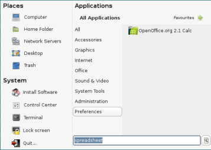
Your primary interaction with your computer is the menu at the bottom left labeled 'Bianca'. This menu (mintMenu) is unique to Linux Mint, and I must say they have developed a very easy and efficient menu system. The menu has been neatly divided into three sections: Places, System, and Applications.
The items under Places logically opens the file manager, Nautilus, in the respective locations.
System houses the Application Installer (Synaptic Package Manager), the Control Center (mintConfig), Terminal, Lock, and Quit dialogues. I shall expand on some of these, later.
The Applications section, in true Linux
tradition, groups applications according to their use. This, in my eyes,
has always been a plus point for Linux over Windows: a very simple idea,
but very effective. Also, newly installed applications are automatically
placed in their respective categories. In keeping with simplicity, most
application names are simplified with their use in mind, e.g., Movie
Player, which is actually Totem Movie Player.
A
brilliant touch to mintMenu is the search field at the bottom.
When you enter text here, the list of applications is filtered, finding
what you are looking for. If you know what application you are looking
for, you could type its name, Firefox, for example. However, if you
don't know the name of the application, you could also type the task you
wish to perform! For example, typing hardware gives you
Device Manager, command gives you Terminal,
spreadsheet gives you OpenOffice Calc, etc. Although
it is not all-inclusive, it is a handy feature for newcomers.
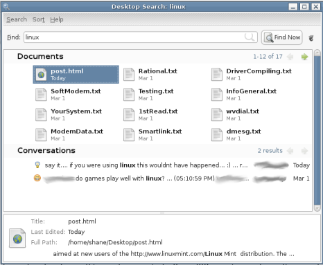
Further, entering something and then hitting Enter opens the search application and searches your home folder for the string you have entered, even searching inside documents, logged IM conversations, contacts, and more. This uses an indexing service called Beagle that runs continuously in the background. I am not a big fan of such non-essential applications that run continuously in the background, and eliminate their need by organizing and naming my files properly. So, I usually turn Beagle off and use the command-line interface (CLI) -based search tool called slocate. However, I have seen situations when it can be useful, and I have used it before. Point being that it all boils down to choice.
In today's world, a computer not networked is like an airplane without wings: you're not going to get very far without networking. If your network is a wired Ethernet one with DHCP (automatically assigned IP addresses), Linux Mint should have already set everything up for you nicely. Some ISPs require you to configure a static IP address. You will need the following information about your connection: your IP address, Subnet mask, Gateway address, and DNS server address.
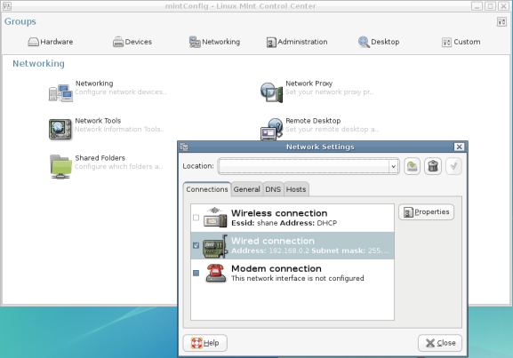
Open the Control Center, and click on the Networking button, which will take you to the page with the network configuration tools. Select the first tool labeled Networking. It will prompt you to enter the administrator's password. The tool opens with a tab displaying all your networking hardware. Select Wired connection, and click Properties.

Set your connection as Static IP address from the drop-down list, enter the settings appropriately, tick Enable this connection, and accept the settings.
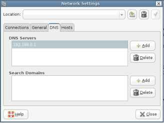
Then, select the DNS tab, enter your ISP's DNS server address in the first row, and hit Enter. Some ISPs may have more than one DNS server, and you can add them by clicking Add, which will create a second field for entering a DNS server. Repeat for other DNS servers. Click Close, and you should be done! Fire up Firefox, and try browsing your favorite Web site, or at least one that will be up for sure. My default is the Google homepage. If it does not work, you could try rebooting.
If you use a wireless connection, Linux Mint comes with a specialized configuration tool, mintWifi, and a comprehensive guide to get it working. Enter the following location in the Firefox address bar while in Linux Mint, to access this guide (file:///usr/lib/linuxmint/mintWifi/index.html). If you are relying on an internal dial-up modem for Internet access, then the solution is slightly more complicated: You can follow the Ubuntu HowTo to try and get it working. Linux's problem in this area is not due to its shortcomings, but rather the refusal of hardware manufacturers to provide drivers for them. This is why the community is fighting for open-sourced drivers. The dedicated Linux developers have even offered to make the drivers for free! Slowly but surely, the community is making advances in this field.
If you are still facing problems, do not hesitate to ask questions on the multitude of community-supported help sites. There is a forum that is supported by and dedicated to Linux Mint. See the links section at the top right of my blog for my favorite Linux forum. Friendly and helpful people abound in the Linux community and it is on the shoulders of these giants that Linux stands.
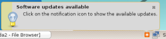
I am sure by now you have seen a little orange square and a pop-up, informing you that updates are available for Linux Mint. Until we got the network up and running, there was no way to update your OS. Since we've now got access to the Internet, we will proceed with updating.
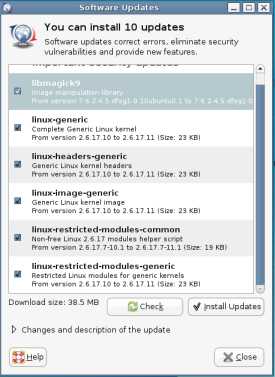
This is a no-brainer, and all it requires is clicking the orange icon and entering your administrator's password. This opens the Software Updates dialogue that shows you what updates are available, categorizes them according to importance, and tells you how big the download is. You have the option of deselecting updates, but, unless you are restricted by your Internet connection, it would be unwise to do so. Click Install Updates, and the application downloads, installs, and configures everything just right.
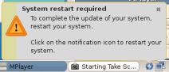
Sometimes, when core system updates are made, as is the case with the first Linux Mint update, you will be required to restart your computer for them to take effect. The Update Manager will inform you when this is necessary, and the orange icon is replaced with a blue reboot icon.
The beauty of the Update Manager is that it automatically keeps track of available updates without any input from you. When updates are available, you will get a visit from the little orange icon, and will have to follow the same steps. So, your system is always fitted with the latest versions of software, patches and fixes. As I said, it's a no-brainer!
Here, I am writing pretty much blind and from speculation. This is because I do not have Windows installed on my computer, as you may have gathered from my first article. I suppose Linux Mint mounts your Windows partitions during the install, and everything should be setup properly. The default mount points for the partitions are /media/hda1, /media/hda2, and so forth. Linux Mint also creates links to the partitions on your Desktop labeled hda1, hda2, etc.
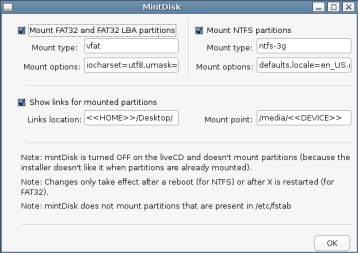
However, if your partitions are not mounted, a tool is provided that will enable you to do so. It is called mintDisk, and can be found in the menu under Applications > Administration or in the Control Center under the Hardware tab. Once you start mintDisk, you will be prompted for the administrator's password, and mintDisk opens up. There are fields available for configuring various options, but, unless you know what you are doing, it is better to leave them alone and simply click OK. If the partitions are not mounted immediately, they will be after the next reboot. Again, I apologize but I have no way of testing this, first hand.
mintDisk will mount your NTFS and FAT32 partitions with read and write permissions. Practically, what this means is that you will be able to browse, open, modify, create, or delete files and folders in your Windows partitions, i.e., you will have full access to them.
Both Windows XP and Linux Mint come with a wide range of drivers for various graphic cards. While these will give you basic functionality, in order to get the most out of 3D-accelerated cards you will need to install the drivers provided by the manufacturer. As you may know, the most popular graphic card manufacturers on the market today are NVIDIA and ATI. You will have to know which one you have (NVIDIA or ATI), in order to install the correct driver. If, like me, you have a low end graphics card, you will not need to install any other drivers as they are well supported with Open Source drivers. These low-end cards include SiS, Intel, and others that escape my memory right now - generally anything not NVIDIA or ATI. [1]
Since I do not have an NVIDIA or ATI card, I cannot give you a first-hand account of what you should do, but, apparently it is as simple as most of the other tools in Linux Mint, albeit a little different. The tool in question is Envy. Linux Mint (at the time of writing) comes with an older version (0.8.x). The newer version is way too easy to ignore, so I'll guide you as far as I can using that.
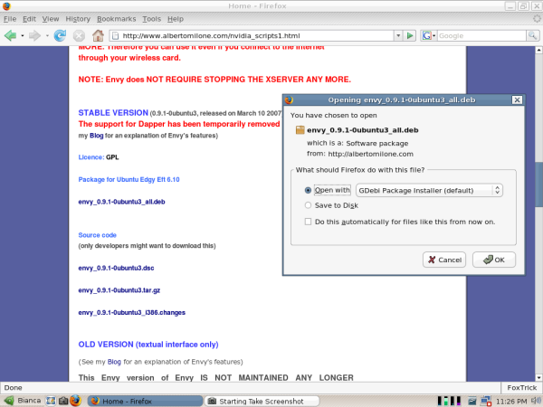
First, we will get the new version from the author's Web site. You can read through the brief description of Envy, to have an idea of what this brilliant tool does. Envy was written for Ubuntu, but since Linux Mint is dedicated to maintaining compatibility with Ubuntu, it will work fine. The download section follows the description of Envy (as shown in the screenshot). Linux Mint 2.2 Bianca is based on the latest version of Ubuntu, which is Ubuntu "Edgy Eft" 6.10. Simply go with the latest version of Ubuntu, since that is what Linux Mint is based on. Soon (April 2007), it will be Ubuntu "Feisty Fawn" 7.04.
There are many downloads available, but you are looking for the latest *.deb file. At the moment, you will find it under Package for Ubuntu Edgy Eft 6.10. The file name (now) is envy_0.9.1-0ubuntu3_all.deb, but always go for the latest stable version. Click on the download, and Firefox will ask you what you want to do with it. Select Open with Gdebi Package Installer.
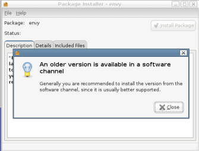
Once Gdebi opens it (administrator's password required), it will inform you that an older version is installed, and recommend you install software from the Linux Mint repositories. I would recommend the same, but we'll make an exception, this time: Close the dialogue, and click Install Package. Gdebi will then provide you with a list of required dependencies, which it will have to download. Accept to do so. When the installation is complete, close Gdebi.
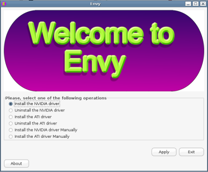
Now we run Envy. You will find it in the menu under Applications > System Tools, and it will require the administrator's password. Select Install the NVIDIA driver or Install the ATI driver, as appropriate for your graphics card. Click Apply. If I am not mistaken, everything should be handled 'automagically!' I am not sure, because I do not have the hardware, but Envy may ask you for some information such as your screen resolution, monitor specifications like frequencies, and the like. These you can get from your monitor's manual or run a quick Google search. When Envy provides you the option of restarting the X server, do so. This should take you back to the login screen, and you should see the NVIDIA or ATI logo before the login screen (unless things have changed since I had my Geforce2). If not, you could try rebooting.
New users to Linux usually try to do things as they would in Windows. This is most often seen in program installation. Most go hunting on the Internet for sites from which to download software they need. Usually, they end up going to the project's homepage, downloading the tar.gz file, and then usually get stumped on installing it from the command line. Many a time they also run into what is known as dependency hell. On the contrary, application installation in Linux is meant to be painless, thanks to the plethora package managers available. Linux Mint uses Debian's apt-get package manager. Synaptic Package Manager is one of the available graphical user interfaces (GUI) of this powerful package manager.
Synaptic Package Manger is in the menu under the System section, and is labeled Install Software. To run it, you will need the administrator's password.
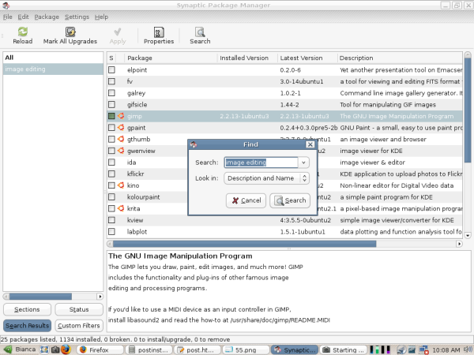
The interface is divided neatly into three fields: On the left, there is a list of categories of software, grouped according to various criteria. There are four grouping criteria, which can be selected by clicking on the buttons on the bottom left: Sections, Status, Search Results, and Custom Filters. The top-right field contains the list of packages in the category selected in the left field, and their status. The bottom-right field gives a short description of the package selected in the top right field. Synaptic Package Manager contains a database of all the packages available for Linux Mint, including those not installed on your system. Browsing through the database, you will see that the amount of free software available to do almost any task imaginable is truly mind-boggling!
The easiest way to find a an application or package is to use the search tool. Click the Search button, and a small dialogue opens with a field to enter your search term and a drop-down list telling it where to search. If you know what package you are looking for, select Name from the list, and run the search. If you want to perform a task but don't know what application you should install, select Description and Name from the list, and run the search.
For example, I needed an image editor to crop and resize the screenshots for this article. So I ran a search for image editing in Description and Name. This gave me a substantial list of matching packages. You will notice that some packages also have the Ubuntu logo next to them. This indicates that these packages are officially supported by Ubuntu, and will most probably work perfectly. Among the officially supported packages in my search result, the descriptions showed that the GIMP package is what suited what I was looking for, the most. (I confess, I knew that already....) Installing is just a matter of Right-clicking on the package and selecting Mark for Installation.
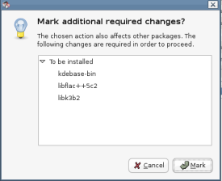
If additional packages are required, a dialogue opens, informing you what other changes are required for things to work properly. Click Mark to accept the other changes. You will see the package highlighted as marked for installation.
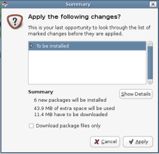
Then click Apply. A dialogue will open, which will give you a summary of changes to be made, including the total size of packages to be downloaded and the space that will be used by the installed packages. Click Apply again and wait for it to download, install, and configure everything for you.
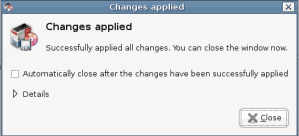
You will be informed when the installation is complete, and if there have been any errors. You can now close the package manager, and you will find your newly installed application in the menu, under Graphics in the case of GIMP. Simple, isn't it!
If everything has gone well so far, you now have a computer running a pretty, stable, secure, convenient, and free OS:
This basic setup should have you well on your way to being productive in your new Linux desktop. In my next article, I will talk about some of the most commonly used applications, fine-tuning, and enhancing your experience in Linux. Till next time, take care, and be nice!
[1] Rick Moen comments: The utility and necessity of ATI and Nvidia's proprietary drivers are frequently overstated, innocently by most commentators, and less so by that driver software's core constituency. That core constituency has to date comprised 3D gamers (majority), scientists and animators using 3D for various types of 3D modeling (minority) and miscellaneous desktop users experimenting with 3D desktop effects such as provided by the quite flashy Compiz and Beryl 3D window managers (small minority).
Utility: As noted above. It's important to note that no video chipset, from any manufacturer, in any way requires proprietary drivers for regular everyday X11 desktop functions, including all regular applications including graphics, desktop publishing, etc. A combination of 3D-capable video hardware and 3D-capable drivers are required only for the rather specialised uses described previously.
To be blunt, aside from having found Compiz/Beryl screen-rolling visual effects cute and appealing for about the first half-hour, I personally could go the rest of my life without 3D cabilities in my X11 sessions, and not miss them at all -- and I strongly suspect that will likewise be true of almost all Linux users, for some time to come. Also, avoiding having some hardware manufacturer's un-auditable binary-only proprietary drivers running in my systems' kernelspace leads immediately to a huge gain in system reliability and security. (Note that the Linux kernel's "taint flag" was developed in response to the Linux kernel mailing list being swamped with bug reports ultimately traceable to buggy Nvidia kernel drivers: deployment of the "taint flag" enabled kernel coders to ignore problem reports from all such users, and they consistently now do so.)
Necessity: An increasingly significant number of graphics chips from non-ATI/Nvidia manufacturers, notably the Intel i965 chip series, have lately been able to achieve quite respectable 3D framerates using entirely open source drivers/libraries (X.org and Mesa, or Xgl) -- because those manufacturers, unlike ATI and Nvidia, cooperate with the open source community. Additionally, and almost never mentioned by the proprietary drivers' proponents, entirely open source 3D works for most ATI R2x0 and R3x0 chips, and a project is underway to do likewise for Nvidia chips. See http://dri.freedesktop.org/ and http://nouveau.freedesktop.org/ for details.
Discussion of 3D on Linux was for years -- again, to be blunt -- relegated mostly to 3D gamers, especially during the 2000-2004 economic downturn when gamers were practically the only people buying new hardware. It's past time for the open source community to take the subject back, and correct the misperception that proprietary drivers are broadly necessary and desirable. They are neither.
Talkback: Discuss this article with The Answer Gang
Shane is a Medical Resident in Romania. He has been a ardent user of FOSS and Linux since 2004. He spends a sizeable amount of time on Linux forums learning about it and helping others where he can. Currently his favorite distro is Ubuntu, while he has used Mandrake/Mandriva in the past on his desktop and still does for his home network server.
My last two articles (1, 2) described the mechanism of TCP congestion control and how the Linux kernel implements it. In order to gain access to the parameters of a TCP connection, I introduced a daemon written in C that accepts a TCP stream's data and periodically writes the parameters of the TCP connection to a file; that took care of the receiver. The sender side, however, is still missing, so we'll turn our attention to that last piece in the puzzle.
Everyone who has ever been involved in networking knows that a data
transmission such as a TCP stream has two ends: you always have a sender
and a receiver, regardless of how asymmetric your data transfer may be.
The receiver has to adjust its window in order to efficiently handle
data reception. At the same time, the sender has to estimate how many
packets can be sent without seeing any acknowledgement of proper
reception. These two TCP parameters do not necessarily change equally.
First of all, there might be different operating systems involved. This
means that two different TCP/IP stacks talk to each other, with both
sides having their own ideas on how to evaluate the quality of the data
link. Then, there are the different TCP congestion algorithms, with some
of them being valid only for the sender, and not for the receiver.
We will now concentrate on the sender side, and insert some code to look
at the TCP connection. We do this in the same way we did for the
receiver. Our C program will get a lot easier, since we don't need to
write a daemon process - we just need a client that grabs some data,
opens a connection to the receiver, and starts sending packets.
Again, before writing code, you should always have a rough idea what you want to accomplish. Programming is nothing more than compiling a list of things to think about (which also means that people thinking in very complex ways may have to write more code). Investing some time into a plan can save you a lot of frustrating hours, later, when coding your ideas. Basically a TCP sender should do the following.
There we go; it's a lot simpler than the last example code. With regard to the data payload, you can either create the data in the program by using random values (or counters), or you can read a file and send it to the TCP socket. I decided to do the latter, since it's closer to real life. Of course, this means that you have to take disk I/O into account, when dealing with very fast network links such as gigabit Ethernet: if the disk subsystem can't keep up with the network interface card, it will most certainly have an impact on the performance of your TCP transmission.
Just as in the daemon code, we will have to set a byte limit on the chunks we put on the network. This will also suggest the rate at which we should copy the TCP parameters to our statistics file. We'll read the data in the tcp_info structure every n bytes.
The connection consists of multiple steps. First of all, we need a TCP socket:
tcp_socket = socket( PF_INET, SOCK_STREAM, IPPROTO_TCP );
if ( tcp_socket == -1 ) {
fprintf(stderr,"Could not open TCP socket: %s\n",strerror(errno));
exit(EXIT_FAILURE);
}
We will use this socket for our data transmission. In contrast to the code of our receiver, we only need a single socket and some appropriate options. There is one particular option that might make some sense; I found it after doing some test runs of the code. Whenever the sender has sent all the data but the receiver hasn't yet received all packets, there is no reason for the sender to keep the TCP socket open: all packets are managed by the kernel, and the application can't do much other than waiting or checking the socket for errors. If you want the socket to last a bit longer than the time needed to copy the payload to the buffers, you can set the SO_LINGER option with a call to setsockopt(). You'll also have to prepare a variable of type struct linger, and load it with the options used by SO_LINGER. We'll enable the option, and set the timer to 13 seconds, meaning the socket will close 13 seconds after the last packet was given to the kernel for transmission.
lingeropt.l_onoff = 1;
lingeropt.l_linger = 13;
if ( setsockopt( tcp_socket, SOL_SOCKET, SO_LINGER,
(void *)&lingeropt, sizeof(lingeropt) ) == -1 ) {
fprintf(stderr,"Could not set SO_LINGER option: %s\n\\"
"Closing the socket will happen in the background.\n",strerror(errno));
}
Note that we continue if this option cannot be set: I used it as an
example of how to properly set socket options. SO_LINGER isn't that
important for what we have in mind, so we'll make that option
optional.
Now we have all we need, and can connect to the server on a specific
port. How do we do that? The user could have provided the server's
address either as a numerical IP or as a name that has to be resolved
via DNS, so we have to convert this into something suitable for the call
to connect(). Fortunately, the GNU C Library can do this for
us. The function gethostbyname() addresses all our needs: it
returns a pointer to a hostent structure containing the
server's address in decoded form.
server = gethostbyname( opt_server );
if ( server == NULL ) {
fprintf(stderr,"Could not resolve server name!\n");
exit(EXIT_FAILURE);
}
The last thing we need to do is prepare and issue a call to connect(). We do this by copying the data returned by gethostbyname() to a structure of type sockaddr. The only information still missing is the port number, so we convert it to network byte order and write it to the structure. Now, we can connect to the receiver.
server_address.sin_family = AF_INET;
memcpy( &server_address.sin_addr.s_addr, server->h_addr, server->h_length );
server_address.sin_port = htons(opt_port);
if ( connect( tcp_socket, (struct sockaddr *)&server_address, sizeof(server_address) ) == -1 ) {
fprintf(stderr,"Could not connect to server: %s\n",strerror(errno));
exit(EXIT_FAILURE);
}
The client is ready to send the data.
The next step is to prepare the data payload. I already talked about sending a file to the receiver; we have two options for this, after opening a file descriptor.
The second method is more convenient. Working with pointers to memory regions is quite common in C code. Mapping a file to a memory region saves you a lot of trouble compared to allocating a temporary buffer, and lets you do fewer copy operations on the payload. The Linux kernel deals with the memory mapping and the timely buffering of file content. The only thing we have to tell the kernel is the file descriptor and the size of the memory region in bytes. Both can be easily obtained. I wrote a small function that returns the file size of the file belonging to a descriptor.
unsigned int get_filesize( int fd ) {
struct stat s;
if ( fstat( fd, &s ) == 0 ) {
return(s.st_size);
}
else {
return(0);
}
}
After the preparation of the descriptor and the size, the memory map can be done by a simple call to mmap().
datafd = open( opt_data, O_RDONLY );
if ( datafd == -1 ) {
fprintf(stderr,"Could not open file '%s'! (%s)\n", opt_data, strerror(errno) );
exit(EXIT_FAILURE);
}
else {
opt_counter = get_filesize(datafd);
data = mmap( 0, opt_counter, PROT_READ, MAP_PRIVATE | MAP_NORESERVE, datafd, 0 );
if ( data == MAP_FAILED ) {
fprintf(stderr,"Can't map file '%s' to memory! (%s)\n", opt_data, strerror(errno) );
close( datafd );
close( tcp_socket );
}
}
You can tell mmap() what you intend to do with the memory region; in our case, read operations are sufficient. That's why we set PROT_READ as an 'advise' for the kernel and the Memory Management Unit (MMU). MAP_PRIVATE creates a private region and makes sure that changes to the mapped memory won't end up in the file - all we want to do is read the file, but setting this option doesn't do any harm. Likewise, the MAP_NORESERVE flag tells the kernel that the mapped region doesn't need to be backed by swap space; we don't want to do write operations, so we don't need any buffering for the memory pages. The data pointer points to the start of the file mapped to memory; we can use this as a starting point, and walk through the memory accessing the whole file. The Linux kernel reads the appropriate data blocks automatically. If you want to make the kernel's job easier, you can tell it what you intend to do with the mapped region - the madvise() function is useful for this. We're not going to use it here, but you should look it up in the man pages, since it's quite handy for other scenarios.
Everything is now set up. All we need to do is to move along the mapped file, send data to the network, and log the TCP parameters. We'll reuse the timer functions from the daemon code. (Good programmers are efficiently lazy.) We'll also copy the same set of parameters from the tcp_info structure, in order to make our result comparable to the one from the daemon code.
/* position is our pointer to the current position in the data buffer. This is
* only important when streaming a file since we have to move along the mmapped
* memory region in steps of opt_counter bytes.
*/
position = data;
/* Stopwatch time. */
get_now( &time_start, 1 );
while ( bytecounter <= opt_counter ) {
/* Send first portion of data */
if ( send( tcp_socket, position, opt_buffer, 0 ) == -1 ) {
fprintf(stderr,"Error '%s' while sending %u bytes.\n", strerror(errno), opt_buffer );
}
/* Move the position pointer. */
position += opt_buffer;
bytecounter += opt_buffer;
/* Measure time in order to create time intervals. */
get_now( &time_now, 1 );
/* Get struct tcp_info and extract parameters. */
tcp_info_length = sizeof(tcp_info);
if ( getsockopt( tcp_socket, SOL_TCP, TCP_INFO, (void *)&tcp_info, (socklen_t *)&tcp_info_length ) == 0 ) {
/* Write parameters to file. */
if ( opt_debug > 0 ) {
fprintf(stdout,"Wrote line to log file after %u bytes sent.\n", bytecounter );
}
fprintf(statistics,"%.6f %u %u %u %u %u %u %u %u %u %u %u %u\n",
time_to_seconds( &time_start, &time_now ),
tcp_info.tcpi_last_data_sent,
tcp_info.tcpi_last_data_recv,
tcp_info.tcpi_snd_cwnd,
tcp_info.tcpi_snd_ssthresh,
tcp_info.tcpi_rcv_ssthresh,
tcp_info.tcpi_rtt,
tcp_info.tcpi_rttvar,
tcp_info.tcpi_unacked,
tcp_info.tcpi_sacked,
tcp_info.tcpi_lost,
tcp_info.tcpi_retrans,
tcp_info.tcpi_fackets
);
}
}
First, we copy the data pointer to a work pointer named position. Next, we start taking the time in order to create relative time stamps - just as we did in the receiver's code. The send() function is used to copy a certain number of bytes to the network; thanks to mmap(), we don't need to copy data from and to different buffers - instead, we simply tell the function the position and the number of bytes to transmit (stored in opt_buffer). After that, we increment the byte counter and the work pointer. We then add a constant value, which may lead to sending more bytes than the actual size of the file. A cleaner way is to check for the immediate end of the payload memory region, and increment the counters by the number of bytes left until the end of the file. Keep this in mind, when comparing the number of bytes transmitted and received.
The remaining code deals with extracting the TCP parameters, and writing everything to the log file. The call to fprintf() is the same as on the receiver side. For your convenience, I've attached the full source, the header file (which is the same as for the daemon code) and a simple Makefile to this article. The code snippets above are only the crucial parts of the code; all the other administrative operations such as parsing the options and allocating and freeing resources are in the full source code. In addition, I have added a part that uses pseudorandom numbers instead of the content of a file as payload.
Our little tool is now able not only to read the thresholds on the congestion window size, but also to read the congestion window itself. You can test this with almost any network connection. However, the congestion window rises significantly only if there is a bottleneck between sender and receiver. Under "normal" circumstances, the congestion window won't change much, and won't reach high values. I used my 512 kbit/s Internet connection at home for some test transfers to a machine in the office. The receiver should have a TCP sink running.
luchs@receiver:~$ ./tcpsnoop -d -f tcpsnoop_receiver.log -p 12345 -b 4096
You can then use tcpshoot for the data transfers.
luchs@sender:~$ ./tcpshoot -b 4096 -c 512000 -f tcpshoot_sender.log -p 12345 -s 10.0.0.1
I did this multiple times, and picked three transmissions for plotting them with Gnuplot. The blue graph is the transmission of the example above, in which I wrote 512000 bytes to the receiver. The green line denotes the same command, but with 1048576 bytes (1 MB) of data. The transfer take roughly double the amount of time. The window quickly rises and falls again. The red line is the transmission of 512000 bytes, again, but this time during a download of a 6 MB file. You can see that the congestion window rises more slowly and, of course, that the data transfer takes longer. 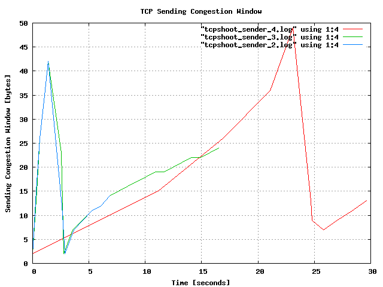
Again, I'll emphasize this, just as I did in my last article: The graph above doesn't prove anything beside the fact that my Linux kernel and my Internet connection are working; it is intended as a simple demonstration of two little tools we have written. It is now up to you to use them in controlled setups with bottlenecks and TCP pipes that allow the TCP algorithms to unfold their capabilities. If you find some interesting behaviour of TCP streams, some setups worth sharing with the world, or have created better graphs than mine, please let Linux Gazette readers know.
Talkback: Discuss this article with The Answer Gang

René was born in the year of Atari's founding and the release of the game Pong. Since his early youth he started taking things apart to see how they work. He couldn't even pass construction sites without looking for electrical wires that might seem interesting. The interest in computing began when his grandfather bought him a 4-bit microcontroller with 256 byte RAM and a 4096 byte operating system, forcing him to learn assembler before any other language.
After finishing school he went to university in order to study physics. He then collected experiences with a C64, a C128, two Amigas, DEC's Ultrix, OpenVMS and finally GNU/Linux on a PC in 1997. He is using Linux since this day and still likes to take things apart und put them together again. Freedom of tinkering brought him close to the Free Software movement, where he puts some effort into the right to understand how things work. He is also involved with civil liberty groups focusing on digital rights.
Since 1999 he is offering his skills as a freelancer. His main activities include system/network administration, scripting and consulting. In 2001 he started to give lectures on computer security at the Technikum Wien. Apart from staring into computer monitors, inspecting hardware and talking to network equipment he is fond of scuba diving, writing, or photographing with his digital camera. He would like to have a go at storytelling and roleplaying again as soon as he finds some more spare time on his backup devices.
In this article, I describe a simple rule-based DoS attack-prevention shell script. However, the proposed shell script is not a perfect tool for preventing DoS attacks, but a powerful tool for alleviating DoS attacks overheads of the Linux servers significantly.
[ Dealing with dynamic threats and automatically taking evasive action is very difficult to do and requires some thought. The article focuses on text patterns and log files. There are other methods that lead to similar results and are mentioned after the author's conclusion. -- René ]
In order to understand DoS or DDoS attacks, it is useful to see the log files in /var/log. In this article, an ssh DoS attack-prevention shell script is mainly mentioned. We have been observing the behavior of ssh DoS attacks through three Linux servers in the last six months. We have been manually manipulating iptables commands for disabling the access from specific IPs, after detecting DoS attacks. The proposed shell script is to automate the whole manipulated commands for DoS attacks prevention. If the proposed simple shell script detects DoS attacks that match predefine rules in the shell script, then the DoS attack IPs are added to the detected-IPs file and have their access to the server disabled. Since detecting DoS attacks is rule-based, it is expandable. Kernel-mode implementation of the proposed idea is expected, for immediate DoS attacks prevention, instead of using crontab in this article.
In order to see /var/log/secure file, you have to be a root. In this article, "grep", "awk", and "sed" commands are often used for building rules in the proposed shell script. The shell script is composed of a part of DoS attack detection rules, a part of reducing redundant IPs, and a part of disabling detected IPs. The following is an example of the typical ssh attack using the dictionary, where every second user name is changed from root, delta, admin,,,, after the system did not receive identification string from 64.34.200.202.
Feb 18 09:14:08 neuro sshd[8978]: Did not receive identification string from 64.34.200.202 Feb 18 09:18:22 neuro sshd[9012]: pam_unix(sshd:auth): authentication failure; logname= uid=0 euid=0 tty=ssh ruser= rhost=64.34.200.202 user=root Feb 18 09:18:24 neuro sshd[9012]: Failed password for root from 64.34.200.202 port 43353 ssh2 Feb 18 00:18:24 neuro sshd[9013]: Received disconnect from 64.34.200.202: 11: Bye Bye Feb 18 09:18:25 neuro sshd[9015]: Invalid user delta from 64.34.200.202 Feb 18 00:18:25 neuro sshd[9016]: input_userauth_request: invalid user delta Feb 18 09:18:25 neuro sshd[9015]: pam_unix(sshd:auth): check pass; user unknown Feb 18 09:18:25 neuro sshd[9015]: pam_unix(sshd:auth): authentication failure; logname= uid=0 euid=0 tty=ssh ruser= rhost=64.34.200.202 Feb 18 09:18:27 neuro sshd[9015]: Failed password for invalid user delta from 64.34.200.202 port 43875 ssh2 Feb 18 00:18:28 neuro sshd[9016]: Received disconnect from 64.34.200.202: 11: Bye Bye Feb 18 09:18:29 neuro sshd[9017]: Invalid user admin from 64.34.200.202 Feb 18 00:18:29 neuro sshd[9018]: input_userauth_request: invalid user admin Feb 18 09:18:29 neuro sshd[9017]: pam_unix(sshd:auth): check pass; user unknown Feb 18 09:18:29 neuro sshd[9017]: pam_unix(sshd:auth): authentication failure; logname= uid=0 euid=0 tty=ssh ruser= rhost=64.34.200.202 Feb 18 09:18:31 neuro sshd[9017]: Failed password for invalid user admin from 64.34.200.202 port 44300 ssh2
The following command sends the disabled IPs information from /etc/sysconfig/iptables into tmp file.
grep DROP /etc/sysconfig/iptables|awk '{print $5}' >tmp
If the system did not receive identification string from the specific IPs, the machine access should be disabled. The following command adds the detected IPs to a temporary file. Detected IPs using rules will be added in that file.
grep Did /var/log/secure|awk '{print $12}' >>tmp
A new rule can be added to the tmp file using the simple command. The dictionary attacks can be easily detected by "Invalid user" from /var/log/secure. If you misspell in ssh login name, you may not be able to login any more from your machine. In order to re-enable login from the machine again, you must delete all the lines including your machine IP from /var/log/secure file and flush the iptables by /sbin/iptables -F.
grep "Invalid user" /var/log/secure|awk '{print $10}' >>tmp
Maximum login DoS attacks can be detected by the following command.
grep "Maximum login" /var/log/secure|awk '{print $7}'|sed 's/.*\[\(.*\)\])/\1/g' >>tmp
The following commands reduce redundant detected IPs from the temporary file, and store the unique detected IPs in file ttt. The variable "size" indicates the number of lines in the tmp file.
size=`wc tmp|awk '{print $1}'`
i=0
while test $i -lt $size
do
us=`sed -n 1p tmp`
sed /$us/d tmp >tmps
echo $us >>ttt
cp -f tmps tmp
size=`wc tmp|awk '{print $1}'`
done
DoS attack IPs are stored in file ttt. The following simple loop activates /sbin/iptables.
size=`wc ttt|awk '{print $1}'`
size=`expr $size + 1`
/sbin/iptables -F
i=1
while test $i -lt $size
do
ip=`sed -n "$i"p ttt`
i=`expr $i + 1`
/sbin/iptables -A INPUT -s $ip -j DROP
done
You have to be root. "crontab -e" command sets the crontab, where the proposed shell script test is stored in /var/log in our system. The following setting means, that every five minutes, the shell script test is activated, everyday.
0-59/5 * * * * /var/log/test
The entire shell script /var/log/test is as follows.
#!/bin/bash
rm -f ttt
touch tmp
# disabled IPs can be obtained from /etc/sysconfig/iptables
grep DROP /etc/sysconfig/iptables|awk '{print $5}' >tmp
# ------------------------ DoS attacks rule -------------------------
#identity mismatch in secure
grep Did /var/log/secure|awk '{print $12}' >>tmp
#Invalid user
grep "Invalid user" /var/log/secure|awk '{print $10}' >>tmp
# Maximum login
grep "Maximum login" /var/log/secure|awk '{print $7}'|sed 's/.*\[\(.*\)\])/\1/g' >>tmp
#
# ------------------ reduce redundant IPs from tmp file -------------
size=`/usr/bin/wc tmp|awk '{print $1}'`
i=0
while test $i -lt $size
do
us=`sed -n 1p tmp`
sed /$us/d tmp >tmps
echo $us >>ttt
cp -f tmps tmp
size=`/usr/bin/wc tmp|awk '{print $1}'`
done
rm -f tmp tmps temp0 temp
#
# ------------------ activate detected IPs --------------------------
size=`wc ttt|awk '{print $1}'`
size=`expr $size + 1`
/sbin/iptables -F
i=1
while test $i -lt $size
do
ip=`sed -n "$i"p ttt`
i=`expr $i + 1`
/sbin/iptables -A INPUT -s $ip -j DROP
done
# -----------------end of shell script test -------------------------
Before running the cron shell script, you must be root and should examine the shell script by:
sh /var/log/test
In order to see the current iptables, type the following command.
/sbin/iptables -nL
Since the proposed shell script is portable, it can be placed in every server or router. In order to share the blacklist of IPs, the shell script must be placed in every router, and router-to-router communication is needed to assemble the blacklist of IPs for the larger framework of network security.
[ The system described in this article relies on predefined patterns that have to be extracted from the log files; this, of course, requires that the syslog server on the machine not drop any log messages. Both assumptions can lead to problems when log entries are dropped or the text pattern of the failed login attempts isn't detected properly. The author mentioned a way to do this automatically from the kernel; the Linux Netfilter provides a module than can be used to automatically deny repeated login attempts. There is an article that describes this method. Whatever you decide to do, keep in mind that a resilient security measure should not depend on less than fully-reliable grounds. Parsing log files makes a fine part of your security measures; just don't make it a cornerstone of your security considerations. -- René ]
Talkback: Discuss this article with The Answer Gang
Yoshiyasu Takefuji was heavily involved in developing a unix based color workstation in 1983 at University of South Florida. Recently he has been monitoring three Linux servers to see the behavior of DOS attacks. He is a chair of SecurityExpo in Japan since 2004 and also a chair of OECD TrustE security product evaluation committee chair in Japan, and advisor of Japan Network Security Association and CMU in Japan.
These images are scaled down to minimize horizontal scrolling.
[ Shane is, perhaps, thinking of the art of origami while hungry for sushi. Or he got his sushi confused with his washi. In any case, wrapping your amberjack in your contract is best left to trained professionals... don't try this at home! -- Ben ]
Click here to see the full-sized image
All HelpDex cartoons are at Shane's web site, www.shanecollinge.com.
Talkback: Discuss this article with The Answer Gang
Part computer programmer, part cartoonist, part Mars Bar. At night, he runs
around in his brightly-coloured underwear fighting criminals. During the
day... well, he just runs around in his brightly-coloured underwear. He
eats when he's hungry and sleeps when he's sleepy.
The Ecol comic strip is written for escomposlinux.org (ECOL), the web site that supports es.comp.os.linux, the Spanish USENET newsgroup for Linux. The strips are drawn in Spanish and then translated to English by the author.
These images are scaled down to minimize horizontal scrolling.
All Ecol cartoons are at tira.escomposlinux.org (Spanish), comic.escomposlinux.org (English) and http://tira.puntbarra.com/ (Catalan). The Catalan version is translated by the people who run the site; only a few episodes are currently available.
These cartoons are copyright Javier Malonda. They may be copied, linked or distributed by any means. However, you may not distribute modifications. If you link to a cartoon, please notify Javier, who would appreciate hearing from you.
Talkback: Discuss this article with The Answer Gang
By Samuel Kotel Bisbee-vonKaufmann
Unfortunately, there will be no new Geekword this month, as I did not have the time required to complete it. However, do not fret, for it shall return next month. The answers to LG #136's Geekword are provided below.
I continue to appreciate any comments, critiques, suggestions, etc. on my
puzzles; please use the "Talkback" link at the bottom of this article to
contact me with any of these.
May my subsequent insanity continue to bring you pleasure.
|
1
G
|
2
N
|
3
O
|
4
M
|
5
E
|
* |
6
B
|
7
A
|
8
F
|
9
U
|
|
10
B
|
I
|
S
|
O
|
N
|
* |
11
B
|
P
|
E
|
N
|
|
12
T
|
H
|
I
|
R
|
D
|
* |
13
S
|
A
|
D
|
M
|
| * | * | * |
14
S
|
L
|
15
I
|
* |
16
C
|
O
|
A
|
|
17
S
|
18
C
|
19
R
|
E
|
E
|
N
|
* |
20
H
|
R
|
S
|
|
21
T
|
O
|
A
|
* |
22
S
|
Q
|
23
U
|
E
|
A
|
K
|
|
24
R
|
D
|
N
|
* |
25
S
|
U
|
L
|
* | * | * |
|
26
U
|
I
|
D
|
27
S
|
* |
28
E
|
T
|
29
H
|
30
E
|
31
R
|
|
32
T
|
N
|
O
|
D
|
* |
33
S
|
R
|
A
|
N
|
D
|
|
34
S
|
G
|
M
|
S
|
* |
35
T
|
A
|
S
|
K
|
S
|
|
Across 1: The Free Software Desktop Project 6: Sam_, skilled (2 wds) 10: yacc replacement 11: US_, small removable media (2 wds.) 12: `sed -e 'n;n;G;'`, insert a blank line every _ line 13: Sy_in, root synonym 14: Allowed tandem identical PCI Express cards to be run 16: One of three basic cryptographic scheme attacks (abbr.) 17: Multiple shells from one shell 20: `date +%-k%-k` 21: Freedom _ster, provides distro vending machines 22: Smalltalk implementation 24: Comprises a DN in LDAP 25: Pico Con_ 26: `sed -e 's/:/ /g' /etc/passwd | awk '{print $3}'` 28: _Ape, graphical network monitor 32: Oracle JDeveloper's _e class extends TreeNode 33: Seeds a specific number generator in C/C++ 34: Segmentation messages (abbr.) 35: KOrganizer helps manage these |
Down 1: Not so normal gigabyte abbr. 2: _ Class Library, formerly known as OOPS 3: Maintains the Open Source Definition 4: _ code, 1830s telographic data transmission system 5: `until [[ 1 == 2 ]]; do echo ""; done` 6: Early Internet forum system 7: Common Web server 8: A soft felt hat that sits next to a red hat 9: 255.255.255.0 to 0.0.0.0 15: "An _", ShowUsTheCode.com is doing this 17: Servlet/JSP framework from 7D 18: A true meaning of hacking 19: 32A cannot generate truely _ numbers 23: _Linux, a SPARC family port 27: 6D admin. tool 29: High availability subsystem (abbr.) 30: `echo -e "\0105\0116\0113"` 31: _d stores analog radio data for _query and lib_ |
Talkback: Discuss this article with The Answer Gang
Samuel Kotel Bisbee-vonKaufmann was born ('87) and raised in the Boston, MA area. His interest in all things electronics was established early as his father was an electrician. Teaching himself HTML and web design at the age of 10, Sam has spiraled deeper into the confusion that is computer science and the FOSS community, running his first distro, Red Hat, when he was approximately 13 years old. Entering boarding high school in 2002, Northfield Mount Hermon, he found his way into the school's computer club, GEECS for Electronics, Engineering, Computers, and Science (a recursive acronym), which would allow him to share in and teach the Linux experience to future generations. Also during high school Sam was abducted into the Open and Free Technology Community (http://www.oftc.org), had his first article published, and became more involved in various communities and projects.
Sam is currently pursuing a degree in Computer Science at Boston University and continues to be involved in the FOSS community. Other hobbies include martial arts, writing, buildering, working, chess, and crossword puzzles. Then there is something about Linux, algorithms, programing, etc., but who makes money doing that?
Sam prefers programming in C++ and Bash, is fluent in Java and PHP, and while he can work in Perl, he hates it. If you would like to know more then feel free to ask.
I'm back again this month, and, after a trip to Poland, am a little
bit less stressed than I was before... though if it wasn't for my
son, I would have looked for a job, so I could stay there (though I
think if I had asked anyone where I should go to look for a job,
they would have said "Try Ireland" )
Slightly on-topic: I was pleasantly surprised in an arcade to see a Tux Racer arcade machine!
(Oh, and this: I had a single room for most of my stay, but on
my last night, Friday, I had to share a room. The first thing I
noticed among my roommate's belongings was a Kubuntu CD )
Rick Moen [rick at linuxmafia.com]
In September, I wrote:
> [1] I have a half-written essay called 'A Man Named Fred', that is > partially a salute the late Fred Korematsu ....
Sometimes, I do finish projects. If interested, see: "A Guy Named Fred" on http://linuxmafia.com/kb/Essays/
[ Thread continues here (2 messages/1.71kB) ]
Rick Moen [rick at linuxmafia.com]
I was just copy editing articles for the upcoming issue, and suddenly remembered to pass along this piece from my wife Deirdre (who knows me entirely too well).
----- Forwarded message from Deirdre Saoirse Moen <deirdre at deirdre.net> ----- Cc: Karsten Self <karsten at linuxmafia.com>, sanehatter at gmail.com From: Deirdre Saoirse Moen <deirdre at deirdre.net> Date: Wed, 27 Dec 2006 17:47:39 -0800 To: Rick Moen <rick at linuxmafia.com> X-Mailer: Apple Mail (2.752.3) Subject: Copy Editors and Light Bulbs Deborah J. Ross Date: Fri 15 Dec 2006 10:08:31aI passed this on to a friend who edits scientific articles, and this is her response:
Q: How many copyeditors does is take to screw in a lightbulb?
A: That sentence isn't clear. Does it mean to have sex in a lightbulb, or to place a lightbulb in its socket? Please clarify.
Suggest:
(1) Sentence as written is ambiguous. Does it mean to have sexual intercourse inside of a lightbulb (in which case, pls clarify size of bulb), or to place a lightbulb in its socket?
(2) The phrase "does it take" is messy. The anticipatory pronoun has no reference. Who or what is doing the taking? Pls recast.
(3) The term "copy editor" is a not complex noun, and thus has no excuse for being set as a single word. It is an adjective (copy) and a noun (editor). A dress the color of mammalian blood is not a "reddress"; it is a "red dress." Note also that, when set as two words, "copy editor" does not take a hyphen, unless the phrase is being used as a complex (non-predicate) adjective, as, for example, "a copy-editor hissy fit."
(4) There is an obvious typographical error. Suggest you proofread manuscripts before submitting them as final.
-- _Deirdre http://deirdre.net/
Benjamin A. Okopnik [ben at linuxgazette.net]
Quoting from weatherunderground.com:
Today Mostly sunny. Windy. Patchy fog in low lying areas this morning. Highs 11 to 17. Wind chill readings 15 below zero to 30 below zero this morning. Northwest winds 15 to 30 mph in the afternoon in locations right near the foothills and near the Wyoming border.I'm so glad that I'm leaving today... although I don't know that Boston, where I'm going next, will be any warmer. I've lived in NYC, where it snows every winter, but this crap brought Moscow to mind.
-- * Ben Okopnik * Editor-in-Chief, Linux Gazette * http://LinuxGazette.NET *
[ Thread continues here (6 messages/7.95kB) ]
Benjamin A. Okopnik [ben at linuxgazette.net]
So, we went out to do some chores, and stopped by a place where Kat used to work. One of the businesses there is a used car/boat/motorcycle dealership, and they just happened to have this nice bike for a decent price - and I just happened to be in the market, ready to trade in my Nighthawk 750 (which was getting a bit old and tired). So, after a bit of horse-swapping, here's my new ride:
2003 Triumph "America" 800cc
http://okopnik.freeshell.org/img/2003_Triumph_America.jpg
(Mine's shinier, though.
[ Thread continues here (3 messages/3.00kB) ]
Rick Moen [rick at linuxmafia.com]
(Please do understand that I was aiming the quip at the end at myself, only.)
----- Forwarded message from mark at weisler-saratoga-ca.us -----
Date: Thu, 04 Jan 2007 22:50:30 -0700 From: mark at weisler-saratoga-ca.us To: svlug at lists.svlug.org Subject: Re: [svlug] SVLUG newsletterHi all, When considering on-line, community-published Linux newsletters what comes to my mind is, of course, The Linux Gazette. http://linuxgazette.net/index.html Several of the Gazette's authors are local to Silicon Valley and also members of SVLUG. But the Gazette's contributors and readers are from all over our globe. Collaboration with the Gazette might be useful to all and there is a existing body of knowledge in the Gazette about how to produce newsletters. They are an excellent outfit. Mark
...snip...
> Bill Ward has mentioned (and I agree) that this could be a cross-LUG effort, > with support coming from CABAL, EBLUG, PenLUG, even NBLUG and > LUGoD. > >
----- End forwarded message ----- ----- Forwarded message from Rick Moen <rick at linuxmafia.com> -----
Date: Thu, 4 Jan 2007 21:54:48 -0800 To: svlug at lists.svlug.org From: Rick Moen <rick at linuxmafia.com> Subject: Re: [svlug] SVLUG newsletterQuoting Mark Weisler (mark at weisler-saratoga-ca.us):
[Linux Gazette:]
> They are an excellent outfit.
Eh, their proofreading sucks. ;->
----- End forwarded message -----
[ Thread continues here (3 messages/3.53kB) ]
Kapil Hari Paranjape [kapil at imsc.res.in]
Hello,
One friend (Rahul Basu) forwarded a link to the Alcatel-Lucent MP3 patent story and I found a blog that seems to have figured out whats going on: http://www.edn.com/blog/1690000169/post/1200007120.html Now it's clear to most of us that software patents are absurd and this story is a consequence of that absurdity.
... but (in the USA) you seem to have got an ever expanding patent regime. Another friend (Rahul Siddharthan) forwarded this blog:
http://ataxingmatter.blogs.com/tax/2006/10/tax_patents_a_w.html
Today the USA, tomorrow the rest of the world.[*]
Einstein in the patent office was not a mistake. We will need Einsteins in the patent office soon.
Q: Do you think Bekham and Roberto Carlos can patent their free-kick techniques?
They do make money based on these techniques and they can probably teach these techniques to others (for a fee!).
Regards,
Kapil.
[*] For example, there have been repeated attempts to change the patent law in India at the behest of the multi-national pharma companies.
Benjamin A. Okopnik [ben at linuxgazette.net]
I'm breaking out in bikes all over these days. Here's my newest toy:
http://okopnik.freeshell.org/img/1995_GSX750F.jpg
(Mine doesn't have all the graphics, but everything else including the color is right.)
Yep, I've sold the Triumph - too much of a cruiser for my blood, and [cough] I can only stand so much British engineering. Seriously - when the manual starts out with cleaning instructions, and has lots of BOLD letters and exclamation points telling you how crucial that part is and how it must be done every single time... well, that's the very definition of "not a bike for the Benster". [shrug] I made money in trading in my old bike, I made more in selling this one, and I got a damn good deal on the new one. And I got to play with a bike that was completely different from anything I've had before. I call that a win all around.
I rode the Katana home today and got off with a huge smile. Hellllo, higher insurance premiums...
-- * Ben Okopnik * Editor-in-Chief, Linux Gazette * http://LinuxGazette.NET *
James NameRemove[j_nameremoved at hotmail.com.invalid]
[[[ A similar scam, using the same institute, is discussed here: http://www.scamfraudalert.com/showthread.php?t=3293 -- Jimmy ]]]
[ Thread continues here (2 messages/2.41kB) ]
Mike Orr [sluggoster at gmail.com]
`` 220 nsvinl1.vanderlande.nl ESMTP TUNIX/Firewall Mail Server 221 Error: I can break rules, too. Goodbye. ''
-- Mike Orr <sluggoster at gmail.com>
[ Thread continues here (2 messages/0.88kB) ]
Sam Modi [smodi at somespammer.invalid]
HiJames
We have C/C++ Applications Developer multiple openings in different locations.
[ Thread continues here (3 messages/3.73kB) ]
Mike Orr [sluggoster at gmail.com]
On 12/29/06, visa at vmaster.spammerscammer.invalid
> FELICITATIONS (Xmas/New Year Bonanza) > Serial No: DPA810-557NL > Batch No: Batch No: EUR/768-DPL > Ref No: EURML/214-dpa/6997/EU > > Kind Attention: Winner, > We are pleased to inform you the result of the computer random selection for > The VISA/MASTER CARD International program held on 24th of December,2006. > Your personal or company email address, attached to serial number > DPA910-77NL drew the lucky numbers 7-9-5-3-9-11-5, and consequently won the > lottery in the 2nd category. > > The email lottery draws was conducted from an exclusive list of 600,000.000 > e-mail addresses of individual, companies, and corporate bodies picked by an > advanced automated random computer search ballot system from the Internet.
Wow, that sounds special.
[ Thread continues here (2 messages/3.54kB) ]
Ben Okopnik [ben at linuxgazette.net]
In an interesting bit of synchronicity, I got one of those emails that Kapil was talking about - no spam content, just... stuff. This one, however, seems to have hit it's mark (Mike Orr would be choking from laughter by now.) The subject, in Russian, means "ALL for the purchase of penguins" - and the content is just "penguin".
Silly spammers... why would we want to buy one after they've already sent us a perfectly good one???
----- Forwarded message from Emmie Warner <xxxx@xxxxxxx.xxx> -----
Date: Mon, 12 Mar 2007 23:23:07 +0200 From: Emmie Warner <xxxx@xxxxxxx.xxx> To: mirrors@linuxgazette.net Subject: [SPAM] VSE na pokupku pingvinovpingvin
----- End forwarded message -----
[ Thread continues here (3 messages/2.45kB) ]
Mike Orr [sluggoster at gmail.com]
---------- Forwarded message ----------
Subject: download huge collection of free ebooks for free
-- Mike Orr <sluggoster at gmail.com>
Talkback: Discuss this article with The Answer Gang
Jimmy has been using computers from the tender age of seven, when his father
inherited an Amstrad PCW8256. After a few brief flirtations with an Atari ST
and numerous versions of DOS and Windows, Jimmy was introduced to Linux in 1998
and hasn't looked back.
In his spare time, Jimmy likes to play guitar and read: not at the same time,
but the picks make handy bookmarks.
 Jimmy is a single father of one, who enjoys long walks... Oh, right.
Jimmy is a single father of one, who enjoys long walks... Oh, right.
By Ben Okopnik
"Foolish Things" is a now-and-again compilation we run based on our readers' input; once we have several of these stories assembled in one place, we get to share them with all of you. If you enjoy reading these cautionary tales of woe, proud stories of triumph, and just plain weird and fun things that happen between humans and silicon, that's great; if you have some to share so that others may enjoy them, even better. Please send them to .
[ You can even tell us that it happened to A Friend of Yours, and we'll believe you. ]
-- Ben
Prozacgod
How's this for foolish - I once was trying to repair one of those old all-in-one Mac Classics. Well, Computer A booted and made the nice little "Happy Mac" startup noise, but no screen; Computer B didn't boot, but the screen came up (well, it wasn't straight black, so I could tell it had power and a retrace) - I decided to swap the power supply from one video board to the other, and taking particular caution to note the "Big Rubberized Red Wire" - well somehow the "BRRW" got in the bundle of wires that I was chopping off. Imagine my surpise! (note: I was sitting indian style in shorts, on a concrete floor, using a large rusty razor blade to hack through the bundle.)
[ Considering that even black-and-white TVs had 15,000 volts coming out of the flyback transformer, and color ones ran about 30 to 40kV, that must have been equivalent to at least a Grande Mocha With The Espresso Shot... with a methaphetamine chaser for a snack. Brrrr. Reminds me of my own days in TV repair. -- Ben ]
Mario Wolczko [unix-horror-story]
[ Once in a while, I like to repost classic Unix stories from the past here; I try to select ones that have educational, interesting, and fun content. Hopefully, they will be of use to new Linuxers, and provide entertainment (and perhaps fond, or even not-so-fond, recollections) for those who have been around for a while. In any case, enjoy. -- Ben ]
Have you ever left your terminal logged in, only to find when you came back to it that a (supposed) friend had typed "rm -rf ~/*" and was hovering over the keyboard with threats along the lines of "lend me a fiver 'til Thursday, or I hit return"? Undoubtedly the person in question would not have had the nerve to inflict such a trauma upon you, and was doing it in jest. So you've probably never experienced the worst of such disasters...
It was a quiet Wednesday afternoon. Wednesday, 1st October, 15:15 BST, to be precise, when Peter, an office-mate of mine, leaned away from his terminal and said to me, "Mario, I'm having a little trouble sending mail." Knowing that msg was capable of confusing even the most capable of people, I sauntered over to his terminal to see what was wrong. A strange error message of the form (I forget the exact details) "cannot access /foo/bar for userid 147" had been issued by msg. My first thought was "Who's userid 147?; the sender of the message, the destination, or what?" So I leant over to another terminal, already logged in, and typed
grep 147 /etc/passwd
only to receive the response
/etc/passwd: No such file or directory.
Instantly, I guessed that something was amiss. This was confirmed when in response to
ls /etcI got
ls: not found.
I suggested to Peter that it would be a good idea not to try anything for a while, and went off to find our system manager.
When I arrived at his office, his door was ajar, and within ten seconds I realised what the problem was. James, our manager, was sat down, head in hands, hands between knees, as one whose world has just come to an end. Our newly-appointed system programmer, Neil, was beside him, gazing listlessly at the screen of his terminal. And at the top of the screen I spied the following lines:
# cd
# rm -rf *
Oh, shit, I thought. That would just about explain it.
I can't remember what happened in the succeeding minutes; my memory is just a blur. I do remember trying ls (again), ps, who and maybe a few other commands beside, all to no avail. The next thing I remember was being at my terminal again (a multi-window graphics terminal), and typing
cd /
echo *
I owe a debt of thanks to David Korn for making echo a built-in of
his shell; needless to say, /bin, together with /bin/echo, had been
deleted. What transpired in the next few minutes was that /dev,
/etc and /lib had also gone in their entirety; fortunately Neil had
interrupted rm while it was somewhere down below /news, and /tmp,
/usr and /users were all untouched.
Meanwhile James had made for our tape cupboard and had retrieved what claimed to be a dump tape of the root filesystem, taken four weeks earlier. The pressing question was, "How do we recover the contents of the tape?". Not only had we lost /etc/restore, but all of the device entries for the tape deck had vanished. And where does mknod live? You guessed it, /etc. How about recovery across Ethernet of any of this from another VAX? Well, /bin/tar had gone, and thoughtfully the Berkeley people had put rcp in /bin in the 4.3 distribution. What's more, none of the Ether stuff wanted to know without /etc/hosts at least. We found a version of cpio in /usr/local, but that was unlikely to do us any good without a tape deck.
Alternatively, we could get the boot tape out and rebuild the root filesystem, but neither James nor Neil had done that before, and we weren't sure that the first thing to happen would be that the whole disk would be re-formatted, losing all our user files. (We take dumps of the user files every Thursday; by Murphy's Law this had to happen on a Wednesday). Another solution might be to borrow a disk from another VAX, boot off that, and tidy up later, but that would have entailed calling the DEC engineer out, at the very least. We had a number of users in the final throes of writing up PhD theses and the loss of a maybe a weeks' work (not to mention the machine down time) was unthinkable.
So, what to do? The next idea was to write a program to make a device descriptor for the tape deck, but we all know where cc, as and ld live. Or maybe make skeletal entries for /etc/passwd, /etc/hosts and so on, so that /usr/bin/ftp would work. By sheer luck, I had a gnuemacs still running in one of my windows, which we could use to create passwd, etc., but the first step was to create a directory to put them in. Of course /bin/mkdir had gone, and so had /bin/mv, so we couldn't rename /tmp to /etc. However, this looked like a reasonable line of attack.
By now we had been joined by Alasdair, our resident UNIX guru, and as luck would have it, someone who knows VAX assembler. So our plan became this: write a program in assembler which would either rename /tmp to /etc, or make /etc, assemble it on another VAX, uuencode it, type in the uuencoded file using my gnu, uudecode it (some bright spark had thought to put uudecode in /usr/bin), run it, and hey presto, it would all be plain sailing from there. By yet another miracle of good fortune, the terminal from which the damage had been done was still su'd to root (su is in /bin, remember?), so at least we stood a chance of all this working.
Off we set on our merry way, and within only an hour we had managed to concoct the dozen or so lines of assembler to create /etc. The stripped binary was only 76 bytes long, so we converted it to hex (slightly more readable than the output of uuencode), and typed it in using my editor. If any of you ever have the same problem, here's the hex for future reference:
070100002c000000000000000000000000000000000000000000000000000000
0000dd8fff010000dd8f27000000fb02ef07000000fb01ef070000000000bc8f
8800040000bc012f65746300
I had a handy program around (doesn't everybody?) for converting ASCII hex to binary, and the output of /usr/bin/sum tallied with our original binary. But hang on---how do you set execute permission without /bin/chmod? A few seconds thought (which as usual, lasted a couple of minutes) suggested that we write the binary on top of an already existing binary, owned by me... problem solved.
So along we trotted to the terminal with the root login, carefully remembered to set the umask to 0 (so that I could create files in it using my gnu), and ran the binary. So now we had a /etc, writable by all. From there it was but a few easy steps to creating passwd, hosts, services, protocols, (etc), and then ftp was willing to play ball. Then we recovered the contents of /bin across the ether (it's amazing how much you come to miss ls after just a few, short hours), and selected files from /etc. The key file was /etc/rrestore, with which we recovered /dev from the dump tape, and the rest is history.
Now, you're asking yourself (as I am), what's the moral of this story? Well, for one thing, you must always remember the immortal words, DON'T PANIC. Our initial reaction was to reboot the machine and try everything as single user, but it's unlikely it would have come up without /etc/init and /bin/sh. Rational thought saved us from this one.
The next thing to remember is that UNIX tools really can be put to unusual purposes. Even without my gnuemacs, we could have survived by using, say, /usr/bin/grep as a substitute for /bin/cat.
And the final thing is, it's amazing how much of the system you can delete without it falling apart completely. Apart from the fact that nobody could login (/bin/login?), and most of the useful commands had gone, everything else seemed normal. Of course, some things can't stand life without say /etc/termcap, or /dev/kmem, or /etc/utmp, but by and large it all hangs together.
I shall leave you with this question: if you were placed in the same situation, and had the presence of mind that always comes with hindsight, could you have got out of it in a simpler or easier way? Answers on a postage stamp to:
Mario Wolczko ------------------------------------------------------------------------ Dept. of Computer Science ARPA: miw%uk.ac.man.cs.ux@cs.ucl.ac.uk The University USENET: mcvax!ukc!man.cs.ux!miw Manchester M13 9PL JANET: miw@uk.ac.man.cs.ux U.K. 061-273 7121 x 5699 ------------------------------------------------------------------------
Talkback: Discuss this article with The Answer Gang

Ben is the Editor-in-Chief for Linux Gazette and a member of The Answer Gang.
Ben was born in Moscow, Russia in 1962. He became interested in electricity at the tender age of six, promptly demonstrated it by sticking a fork into a socket and starting a fire, and has been falling down technological mineshafts ever since. He has been working with computers since the Elder Days, when they had to be built by soldering parts onto printed circuit boards and programs had to fit into 4k of memory. He would gladly pay good money to any psychologist who can cure him of the recurrent nightmares.
His subsequent experiences include creating software in nearly a dozen languages, network and database maintenance during the approach of a hurricane, and writing articles for publications ranging from sailing magazines to technological journals. After a seven-year Atlantic/Caribbean cruise under sail and passages up and down the East coast of the US, he is currently anchored in St. Augustine, Florida. He works as a technical instructor for Sun Microsystems and a private Open Source consultant/Web developer. His current set of hobbies includes flying, yoga, martial arts, motorcycles, writing, and Roman history; his Palm Pilot is crammed full of alarms, many of which contain exclamation points.
He has been working with Linux since 1997, and credits it with his complete loss of interest in waging nuclear warfare on parts of the Pacific Northwest.

{kind=link}
{kind=link}
{kind=link}
{kind=link}